The Essentials of GRADE for Comparisons of Two Healthcare Strategies: Core GRADE
1 Introductory Material
1.1 What is Core GRADE and How Should You Use It?
Core GRADE provides a distillation of all that is essential from prior GRADE guidance to produce rigorous GRADE applications to systematic reviews, clinical practice guidelines, and health technology assessments (HTA). In other words: if you wish to use GRADE to create a review, a guideline, or an HTA for paired comparisons of healthcare strategies, this is the only place you have to look.
Core GRADE also includes refinements, all of which are simplifications, clarifications, or presentations that enhance the clarity and ease of GRADE use. Key innovations include an emphasis on viewing both individual GRADE domains and overall certainty as continua; clarification of decisions related to addressing potential relative and absolute subgroup effects when formulating patient/intervention/comparator/outcome (PICO) questions; and, most important, the use of flow charts and algorithms to guide GRADE implementation.
Finally, Core GRADE includes many examples, and quite a few appendices. Most of the appendices provide additional illustrative examples of material in the text. On occasion, they present extensions that go beyond Core GRADE. We include these primarily for readers who may be wondering about how we see more complex guidance that the Core does not include.
1.2 What Motivated the Development of Core GRADE?
GRADE has had an enormous impact on the world of evidence synthesis and evidence-based recommendations. Reasons for the rapidity of GRADE’s widespread uptake included its initial practicality and user friendliness, combined with rigor and detailed guidance for application.
That initial user friendliness has unfortunately been seriously undermined by increasing complexity and difficulty navigating the large body of GRADE guidance. More than 60 publications now provide guidance on GRADE, many with levels of complexity that GRADE users find challenging. Secondly, keeping up with evolving GRADE guidance has proved daunting for users required to find and process continually appearing new guidance that is poorly organised and difficult to navigate.
We created Core GRADE in response to the need for a concise, well organised exposition of the key GRADE elements that users require to ensure that their judgments about certainty of evidence and strength of recommendations are optimal. Core GRADE serves the needs of systematic review authors, guideline developers, and health technology assessment practitioners—individuals who compare healthcare strategies and are interested in using GRADE. Another audience is EBM educators who help clinicians to understand and use GRADE to guide clinical care. Core GRADE solves the problem of outdated and poorly organised guidance resulting from the sequential publication of the many GRADE papers over 20 years.
1.3 How Was Core GRADE created?
The authors of Core GRADE, who included those primarily responsible for the key papers in the original Journal of Clinical Epidemiology series, began by identifying and reviewing in detail all prior GRADE guidance. These included papers published under the auspices of the GRADE working group and other guidance published by GRADE experts. For each item of guidance, we asked ourselves: is this guidance necessary to make sound judgments on certainty of evidence and direction and strength of recommendations. If the answer to the question was no, you won’t find the item in Core GRADE. Core GRADE thus includes all the essentials for paired comparisons of healthcare strategies from prior GRADE writings, and nothing beyond the essentials, however elegant or sophisticated.
Some have raised questions about whether Core GRADE is really GRADE. The process by which we developed the Core demonstrates that nothing could be more GRADE than the Core - as this one minute video illustrates: video
1.4 Core GRADE Complementary Material
This website contains additional material that you may find of use in applying Core GRADE.
Frequently asked questions: Core GRADE users have asked questions that arose in their systematic reviews and guidelines. We have provided answers to these questions, in the process clarifiying particular points of GRADE guidance. If you have a question about GRADE use that you would like answered, just send an email to guyatt@mcmaster.ca. You will receive a quick response.
JUDGE, a step-by-step tool for GRADE certainty ratings: The website includes a new instrument aiding reviewers in application of Core GRADE. Because GRADE guidance remains largely conceptual, a complementary tool that translates these principles into step-by-step processes that users can consistently apply is needed. JUDGE is this tool – it helps Justifying Uncertainty Decisions for GRADEing Evidence. Core GRADE’s explicit algorithms and flowcharts clarify the logic of certainty assessment and JUDGE converts each element of the certainty-assessment reasoning pathway into a sequence of structured signalling questions, guiding users through transparent judgments. By embedding Core GRADE into explicit decision pathways, JUDGE combines conceptual rigour with practical usability, supporting application of GRADE across systematic reviews for users with differing levels of expertise.
ROBUST-RCT for assessing risk of bias in RCTs: The website also includes all you need to apply the instrument for assessing risk of bias, ROBUST-RCT, that we recommend. ROBUST-RCT achieves the perfect balance between simplicity and methodological rigor and includes important innovations. First, it proposes a two-step approach for assessing core items: evaluation of whether methodological safeguards had been implemented and then judge the extent to which any deficits in instituting safeguards resulted in risk of bias. Second, it suggests eight optional items that systematic reviewers can, if the issues are important for their review, include.
ICEMAN for assessing the certainty of subgroup analysis: The only formally structured instrument available for addressing the credibility of subgroup analyses. ICEMAN offers versions for RCTs and, most relevant for GRADE, systematic reviews. The instrument provides a small set of rating items and an overall credibility item that integrates well with the GRADE approach. Since its publication in 2020, ICEMAN has received wide use and positive feedback from GRADE users. You can find all you need to use ICEMAN, including a user manual, at www.iceman.help.
1.5 Organizational partnerships
Core GRADE is a creation of its authors in partnership with the MAGIC Evidence Ecosystem Foundation https://magicevidence.org/ a non-profit organization promoting high-value, low-waste healthcare via a digital ecosystem of trustworthy guidelines, evidence summaries, and decision aids. In producing the Core GRADE website, we have also worked in partnership with McMaster University; McMaster is hosting this website.
Feedback Core GRADE is a process in evolution. We welcome feedback, particularly in how we can improve Core GRADE. Whatever you find unclear, too complicated, unnecessary, or could be better expressed please let us know. Just send an email to guyatt@mcmaster.ca
What this Resource Doesn’t Do The Core GRADE website takes a minimalist approach to citations. If you wish to explore the full range of articles relevant to Core GRADE you will need to go back to the BMJ papers.
Moreover, If you wish to include more complex or sophisticated guidance beyond the essentials of GRADE, you will need to consult published GRADE papers. For some authors, and some target audiences, this may be desirable. However, is including more complex considerations ever necessary to ensure trustworthy GRADE ratings of certainty or recommendation direction and strength? Given that Core GRADE includes all elements necessary to make trustworthy judgments regarding certainty of evidence grading recommendations, we think not.
1.6 Citing Core GRADE
When you are using Core GRADE for your reviews, guidelines, or health technology assessments, though your access was through the website, we would appreciate your citing the original GRADE papers from the BMJ from which the material you have used came. The citations follow:
1. Why Core GRADE is needed: introduction to a new series in The BMJ
2. Core GRADE 1: overview of the Core GRADE approach
3. Core GRADE 2: choosing the target of certainty rating and assessing imprecision
4. Core GRADE 3: rating certainty of evidence-assessing inconsistency
5. Core GRADE 4: rating certainty of evidence-risk of bias, publication bias, and reasons for rating up certainty
6. Core GRADE 5: rating certainty of evidence-assessing indirectness
7. Core GRADE 6: presenting the evidence in summary of findings tables
8. Core GRADE 7: principles for moving from evidence to recommendations and decisions
1.7 Contributors
Project oversight: Gordon Guyatt, Thomas Agoritsas Platform programming and Design: liang Yao, Kaitlynn Kemp, Mingming Wang, Ming Liu Leticia Kawano-Dourado JUDGE and associated videos: Prashanti Eachempati ROBUST-RCT: Ying Wang Core GRADE Authors: You can find the authors of each of the articles presented on this website, in the BMJ series. Authors making substantive contributions to the revisions in the website include: Thomas Agoritsas, Linan Zeng, Prashanti Eachempati, Dalal Ali, Hassan Murad, Sheri Keitz, Stefan Schandelmaier, Ariel Izcovich, Lars Hemkens, Monica Hultcrantz, Romina Brignardello, Luis Colunga, liang Yao, Alfonso Iorio, Reem Mustafa, Ying Wang Other Core GRADE authors include Victor Montori, Per Vandvik, Arnav Agarwal, Derek Chu, Rohan D’Souza, Stefan Schandelmaier, Jamie Rylance, Benjamin Djulbegovic, Farid Foroutan, Manya Prasad, Hans de Beer, Roman Jaeschke, Sameer Parpia, Kameshwar Prasad, Andrew Owen, Ganesan Karthikeyan, Carlos Coello, Kevin Kim, Bram Rochwerg, Chunjuan Zhai, Lingli Zhang, Pasqualina Santaguida, Tahira Devji, Ivan Florez
2 Overview of Core GRADE
2.1 Scope of Core GRADE
Core GRADE applies to the design, conduct, and analysis of systematic reviews as well as to use of their results in moving from evidence to decisions in clinical practice guidelines or health technology assessments. In the context of both reviews and guidelines, Core GRADE focuses on evidence comparing a single intervention with a single comparator. In the context of clinical practice guidelines, Core GRADE takes, primarily, an individual patient perspective. Nevertheless, the underlying principles also apply to a population or public health perspective that Core GRADE users may, in the context of clinical practice guidelines, consider as a secondary perspective. A glossary provides plain language definitions of key GRADE terms.
2.2 The Core GRADE Process, Systematic Reviews and Evidence to Recommendations
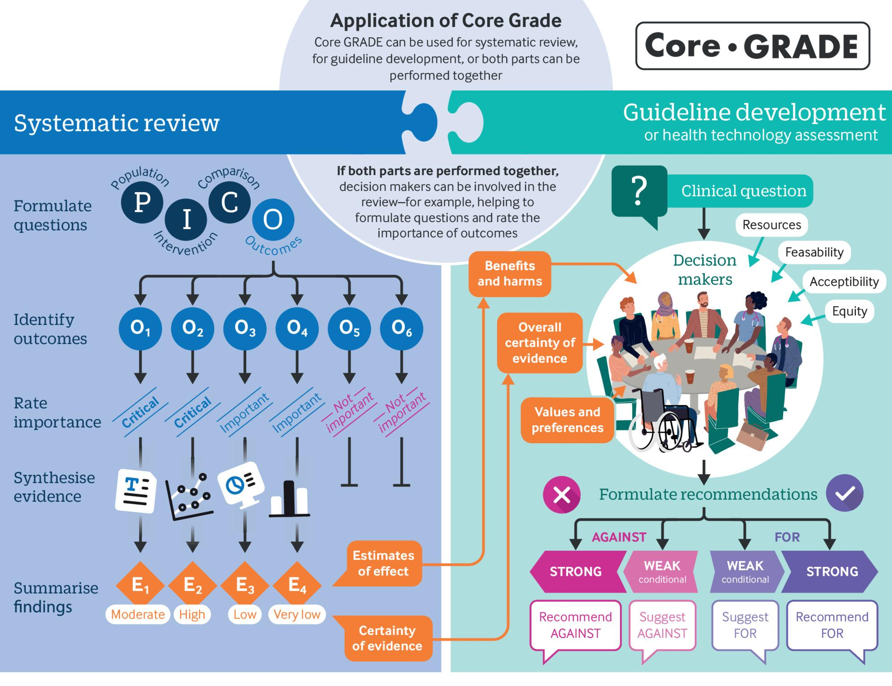
Fig 2-1 depicts each of the key steps in using Core GRADE to create clinical practice guidelines or health technology assessment (HTA)reports: summarising the evidence, rating its certainty, and moving from evidence to recommendations. In Fig 2-1, the left panel addresses the systematic review process, including the definition of the review question formulated using the Patient/Intervention/Comparator/Outcome (PICO) format. The process includes specification of the relative importance of each of the outcomes, followed by the collation and summarization of the evidence, including ratings of certainty (quality) of the evidence for each outcome. The right panel depicts the decision-making process involved in the development of clinical practice guidelines and HTA reports. That process involves a guideline panel or decision-making group that considers key issues of magnitude of benefit, harms and burdens, certainty of evidence, and patient or public values and preferences. Decision makers might also consider resources, feasibility, acceptability, and equity in coming to recommendations either for or against an intervention and further specifying recommendations as strong or conditional (weak). When considering a population or public health perspective, they will almost always consider issues of resources, feasibility, acceptability, and equity.
When we refer to recommendations, we mean not only the highly structured guidance GRADE suggests for clinical practice guidelines but also the less formally structured guidance that HTA reports typically provide for their target decision makers. Although we focus our discussion on the structure of the guideline development process, it is also relevant to HTA and, excepting the process of moving from evidence to recommendations, to systematic reviews.
We will now present in detail the first steps in applying GRADE that involve planning the systematic review. These involve specifying the PICO, the formulation of the question, rating the importance of the outcomes, considering the possibility of subgroup effects, and considering the possible need for indirect evidence.
3 Planning the Systematic Review
3.1 Framing the Question
All applications of GRADE, whether for systematic reviews, HTA reports, or clinical practice guidelines, begin with the identification of a healthcare question using a structured process to specify the relevant population, interventions, comparisons, and outcomes of potential importance to patients—the target PICO. Optimal use of GRADE involves careful thought about the formulation of each element of the PICO structure, being as specific as possible and avoiding ambiguity. In the past, GRADE users have often lacked precision in how they specify their target PICO.
The careful, explicit, and transparent specification of the target PICO represents a key aspect of GRADE. In particular, GRADE users must be as precise as possible when defining the target population. Including a GRADE expert explicitly charged with helping systematic review teams and guideline panels to formulate their PICOs has proved helpful in achieving the desired precision. The GRADE expert should work with a steering group that translates broad questions generated by the panel into detailed structured questions. The steering group will subsequently help the panel consider differences between its target population and patients enrolled when the GRADE framework considers issues of indirectness.
The choice of population can be challenging. For example the population, the methods expert group of a World Health Organization (WHO) panel (with the function of a steering group in other settings) addressing the management of sepsis encountered problems in arriving at a precise definition—problems the GRADE expert on the group highlighted. GRADE users will often encounter studies with varied definitions of their population. In the current example, the guideline developers came across several definitions of sepsis, including a revised consensus definition that differed from that used in individual trials, which also differed from one another.
To resolve the problem of such discrepancies, the panel used the most recent consensus definition of sepsis, recognising that the greater the extent to which eligibility criteria in the trials differed from the consensus, the greater the possibility that the evidence included in the review would not reflect the target population (and thus, in GRADE terminology, would introduce indirectness).
The box below presents another example of the need for careful specification in defining the PICO and highlights how authors must think ahead to the needs of their target audience when formulating the research question.
3.2 Rating the importance of outcomes
Core GRADE users will initially identify all outcomes that are potentially important to patients and subsequently decide on those of sufficient importance to consider further. Guideline panels may undertake a structured process to rate the importance of potentially relevant outcomes. In doing so, they will adopt the perspective of the population to which the guideline applies and may use a 9 point scale, with ratings of 7 to 9 representing critical outcomes, 4 to 6 representing important but not critical outcomes, and 1 to 3 representing unimportant outcomes. Ideally, if resources permit and they anticipate finding useful information, they would make this rating informed by a systematic review of patient values and preferences. Once again if resources permit, they may conduct a focus group of relevant patients.
In the hypothetical guideline depicted in figure 1, panelists identified six outcomes of potential relevance, of which they judged two as critically important, two as important, and two as not important. They would give no further attention to the two outcomes considered not important while continuing to consider the other four. Outcomes of importance can differ across the stages of an illness. For example, an Infectious Diseases Society of America guideline panel addressing patients admitted to hospital with covid-19 considered the most important outcomes (those GRADE labels as critical) as mortality, need for invasive mechanical ventilation, and duration of hospital stay. For outpatients with covid-19, the panel considered hospital admission as a critical outcome. For patients receiving pre-exposure or postexposure prophylaxis, critical outcomes included measures of symptomatic covid-19. Another crucial problem in considering outcomes is the relevant time frame: days, months, or years and, whatever chosen, how many?
In the WHO sepsis guideline, for all the wide variety of interventions under consideration (eg, corticosteroids, inotropes, different starting times for antibiotics) and outcomes (eg, mortality, adverse effects of treatment, functional recovery), the panel considered several alternatives: during hospital admission, the first month after hospital admission, or a considerably longer time frame (eg, six months). The panel decided on the 28 days after hospital admission as the primary duration of interest and six months as a secondary duration.
Because the lowest certainty of evidence of the critical outcomes informs overall certainty of evidence, guideline panels that make a rating of overall certainty—and the systematic reviews created to inform a specific guideline—need to distinguish between critical outcomes and important but not critical outcomes. Often, however, systematic review authors perform reviews independently of practice guidelines or health technology assessments. Although most problems faced by these independent reviews do not differ from reviews specifically conducted for health technology assessments or guidelines, one problem that does differ concerns differentiating between critical and important but not critical outcomes.
Because systematic review authors do not need to make judgments regarding the balance of benefits, harms, and burdens, they do not need to judge the relative importance of the outcomes they have chosen. In particular, they do not need to make an overall rating of evidence certainty, and thus do not need to distinguish between critical outcomes and important but not critical outcomes.
3.3 Considering the possibility of different effects across differences in populations, interventions, or outcomes
GRADE users must, in planning their systematic review, consider the possibility that treatment effects differ across population, intervention, or outcome characteristics. In the past, GRADE users have often shown confusion between relative and absolute effects, and we will here clarify this problem in some detail. Furthermore, systematic review authors and guideline panels have generated an excessive number of hypotheses and have failed to specify the direction of anticipated effect. In addition, they have often failed to recognise that differences in relative effect across subgroups of patients are unusual and have been ready to judge the credibility of subgroup effects as high when they are not.
For binary (yes/no) outcomes such as death and hospital admission, treatment effects may differ as a result of differences in relative effects (eg, no effect—that is, relative risk of 1.0—in one patient group, relative risk of 0.5 in another), or differences in prognosis across members of the comparator group, which we often refer to as baseline risk. For example, the relative risk may stay the same, but the comparator group event rate—the baseline risk—may prove 5% in one group of patients and 20% in another.
For differences in relative effects, authors refer to factors that could influence the magnitude of effect using interchangeable terms such as subgroup effect, effect modification, or interaction. For continuous outcomes such as pain or length of hospital stay, typically presented using an absolute difference scale, effects may also differ across groups. For example, in a PICO addressing pain using a 10 cm visual analogue scale, the intervention effect may prove to be 3 cm in one patient group and 1 cm in another.
Patient characteristics that may modify either relative effect or baseline risk include age, severity of illness, patient circumstances such as socioeconomic status, and comorbidity. Intervention characteristics such as dose or duration of administration as well as outcome characteristics such as alternative outcome definitions or varying duration of follow-up can also influence treatment effects.
As they refine their question, GRADE users consider both relative effects (relative risks, odds ratios, or, for time to event analyses, hazard ratios) and absolute effects (risk differences). Relative treatment effects are, however, most often similar across subgroups—true subgroup relative effects are uncommon. GRADE users should therefore be parsimonious in postulating subgroup relative effects and specify a direction for each postulated effect. For example, authors should not only identify that effects may differ in patients according to their age but also, for instance, that the intervention effects will be larger in elderly people than in younger people. Large numbers of hypothesised subgroup effects and failure to specify their direction will undermine the credibility of any apparent subgroup effect. Later in our presentation we will address inconsistency in results across studies and return to the problem of credibility of subgroup effects.
Although relative effects are usually similar across patient subgroups, absolute effects of interventions will differ substantially when subgroups of untreated patients have different probabilities (different baseline risks) of the outcomes of interest. For example, a treatment associated with a consistent relative risk reduction of 50% might reduce mortality in young people without comorbidity from 2% to 1% (absolute difference 1%) and in old people with comorbidity from 40% to 20% (absolute difference 20%). Such differences, although perhaps not often of this magnitude, are common. This is the reason that absolute and not relative effects are important to patients: young people in this example might be reluctant to use an intervention with substantial harms, whereas old people will be more inclined to do so. You may find an exercise in distinguishing between prognosis (baseline risk) and relative risk as sources of difference in absolute effects across groups helpful.
Ideally, panels and review teams will specify a small number (≤3) of relative subgroup effects including a postulated direction. GRADE users may also anticipate different recommendations for groups at different baseline (absolute) risks, and this might result in different recommendations—for example, recommendations in favour of an intervention for patients at higher risk and against for patients at lower risk.
In an example adapted from WHO’s living guideline for covid-19 therapeutics, when making recommendations for nirmatrelvir-ritonavir in patients with non-severe covid-19, the guideline panel postulated both possible absolute effects and possible relative differences between populations (Table 3-1). For each postulated effect, the WHO panel made the direction of effect explicit, hypothesising for instance that the effect of treatment would diminish if the administration of the intervention were delayed.
| PICO and group specification | |
|---|---|
| Population | Patients with non-severe confirmed covid-19 (according to WHO severity definitions) |
| Intervention | Nirmatrelvir-ritonavir+standard care |
| Comparison | Standard care |
| Outcome | Hospital admission, mortality, mechanical ventilation, adverse effects leading to drug discontinuation, time to symptom resolution |
| Groups with possible varying baseline risk (prognostic factors expected to lead to differences in baseline risk) |
Likely determinants of baseline risk: • Larger baseline risk in immunocompromised patients or those with chronic disease • Larger baseline risk in those with negative serology results • Larger baseline risk in unvaccinated people |
| Groups with possible varying relative risk (differences in effect in different patient groups) |
Candidate effect modifiers: • Larger beneficial relative effects of the intervention in those with shorter time from symptom onset • Larger beneficial effects in those with negative serology results • Larger beneficial effects in unvaccinated people |
PICO=population, intervention, comparison, and outcome.
The systematic review team reported no credible relative subgroup effects. They did, however, identify substantial differences in effect between patients with different baseline risks. In particular, they found that despite patients with a high and low baseline risk having the same relative effect, nirmatrelvir-ritonavir was likely to result in important reductions in both mortality and hospital admissions in patients at high risk; in patients with a low baseline risk, benefits were likely to be trivial. More specifically, the anticipated reduction in hospital admissions for patients at low risk was about 4 per 1000 (0.4%) and for those at high risk was 50 per 1000 (5%). When considering the large differences in effect between patients at low and high risk, the guideline panel issued a strong recommendation in favor of nirmatrelvir-ritonavir for patients at high risk and a weak recommendation against its use for patients at low risk.
3.4 Possible need for indirect evidence
A final problem authors of systematic review, and particularly HTA , and clinical practice guidelines, must consider is the possible need to seek indirect evidence—that is, evidence from studies with a PICO that does not completely correspond to the target PICO. Review teams will need to search for indirect evidence when they anticipate direct evidence may be limited and the highest certainty evidence may be indirect. For example, early in the covid-19 pandemic, before evidence was available from randomised controlled trials in covid-19 patients, guideline developers addressing the use of steroids for those with severe covid-19 considered evidence from randomised controlled trials showing benefit in patients with acute respiratory distress syndrome whose clinical presentation is similar to that of critically ill patients with covid-19. The panel decided that although the evidence was limited by indirectness, it warranted a conditional recommendation for use of steroids in patients with severe covid-19.
Having completed the steps of planning their systematic review, review teams will, as depicted in figure 1, proceed to synthesize the effects of the interventions of interest on the outcomes of interest in the patients of interest and then judge the associated certainty of evidence.
4 GRADE's Rating of Certainty of Evidence – an Overview
4.1 The First Step in Assessing Certainty: Choosing a Target of Certainty Rating
GRADE's certainty rating represents confidence that the true effect lies on one side of a chosen threshold (such as an important difference) or in a particular range (such as a small effect). GRADE offers a four-category system of rating certainty as high, moderate, low, and very low. Although GRADE certainty ratings rely on evaluation of individual studies, they refer to the entire body of evidence addressing a particular outcome rather than those individual studies.
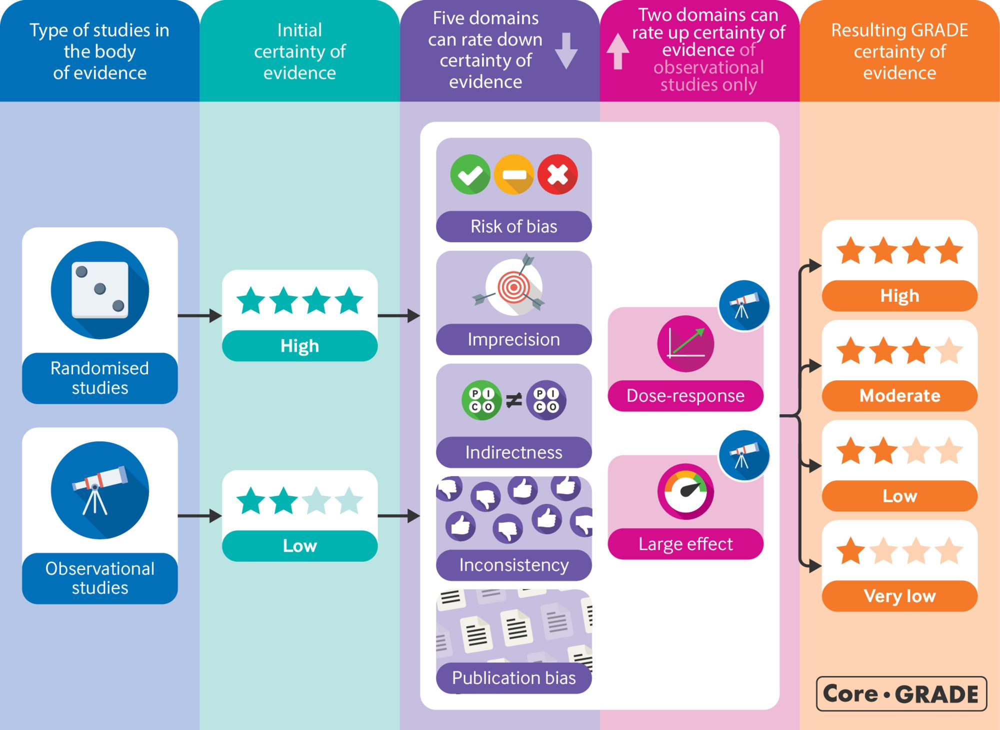
Fig 4-1 summarises the GRADE approach to rating certainty of evidence for intervention effects. If the evidence comes from randomised controlled trials, Core GRADE ratings begin as high certainty. In contrast, a body of evidence from non-randomised studies of interventions (eg, cohort and case-control studies) begins as low certainty. Certainty in the evidence from both randomised controlled trials and non-randomised studies decreases when limitations are identified in any one of five domains: imprecision, inconsistency, risk of bias, indirectness, and publication bias. Core GRADE users can rate up certainty in non-randomised studies (but not randomised controlled trials) for large effects and for evidence of a dose-response gradient.
Previous GRADE guidance that included the possibility of rating up as a result of predictable direction of plausible confounding has proved too difficult to apply and too rarely applicable to be part of Core GRADE. We characterise limitations in each of these domains involved in rating down certainty as not serious; serious; very serious; or, rarely, extremely serious. The loss of certainty will result in rating down once for a particular domain (for example, from high to moderate certainty) if concerns are serious, and twice for a domain (for example, from high to low) if concerns are very serious.
Although GRADE has divided certainty of evidence into four categories, certainty is actually a continuum. As a result, one may, when rating is near a cut-off point between categories, have disagreements about certainty when judgments are in fact similar (fig 3).
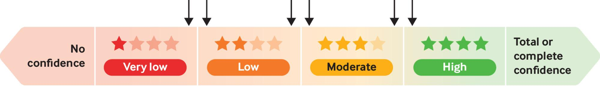
In terms of ratings near a cut-off point, the same phenomenon can occur when deciding whether to rate down in any one domain. Ratings may be near the cut-off point between no serious and serious concerns (potentially mandating rating down one level) or between serious and very serious (potentially rating down two levels) (fig 4).
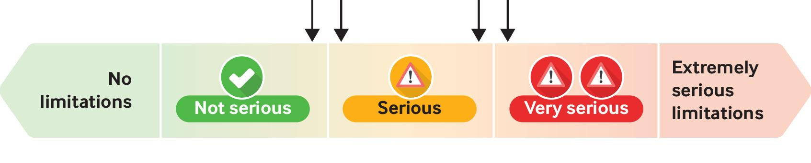
To illustrate the potential problem, consider the following scenario. While summarising certainty of evidence for randomised controlled trials, the rating is near the threshold between no serious and serious limitations for three domains, with no problems in the other two domains. Erring on the side of not rating down, one might not rate down for any of the three and emerge with high certainty evidence. Erring on the side of rating down, one might rate down for all three and emerge with very low certainty evidence.
In this situation, one might consider the magnitude of the problems in the three domains, conclude that the certainty of evidence is near the threshold between moderate and low certainty, and ultimately decide to either rate down once and conclude moderate certainty evidence or rate down twice and conclude low certainty evidence. Such a situation illustrates the necessity for, after considering each of the individual domains, stepping back and taking an overall view of the threats to certainty of evidence.
For example, in the WHO’s living guideline for covid-19 therapeutics recommendation addressing lopinavir-ritonavir versus standard care for mortality and mechanical ventilation, the review team identified problems with both inconsistency and imprecision for mortality and mechanical ventilation outcomes. In both cases, however, the problems were near the threshold between not serious and serious (Fig 4-3) and thus were not so serious as to warrant rating down for both domains, with consequent low certainty of evidence (ie, rating down from high to low).
Thus, the decisions for mortality and mechanical ventilation was that the evidence was of moderate certainty. The panel noted that concerns in both inconsistency and imprecision domains led to the rating down from high to moderate certainty evidence. These thoughtful judgments reflect the strength of Core GRADE: the facilitation of a careful deliberative assessment of evidence within a sound, carefully considered, transparent structure that allows for flexibility.
Overview of the process of choosing a target and possible thresholds
When assessing the effect of an intervention, the primary interest is whether it outperforms alternatives such as standard care or other existing treatments. If no difference exists in benefit outcomes, a guideline panel will unlikely recommend and clinicians will unlikely use the new treatment unless it offers other advantages, such as reduced harms or burdens. Moreover, merely identifying the presence of an effect is often insufficient to recommend a treatment: patients and clinicians need to know whether the effect is large enough to be important. The question of whether there is an effect compared with the alternative corresponds to using the threshold of null effect, whereas the question of whether the effect is important aligns with using the minimal important difference (MID). The MID, a crucial concept in clinical studies and Core GRADE methodology, represents the smallest change in a single outcome that patients perceive as important.
The focus of Core GRADE is on these two questions: whether there is an effect compared with the alternative (ie, using the null as a threshold) and whether the effect is large enough to be important for patients (ie, using the MID as a threshold) (Fig 4-4). Use of additional thresholds of moderate and large effects has proved challenging for GRADE users and in our judgment does not provide important incremental value in making sound and optimally useful ratings of certainty. Nevertheless, those who wish to go beyond Core GRADE may wish to consider judgments of small, moderate, and large effects E. (Imprecision rating for ranges of effects).
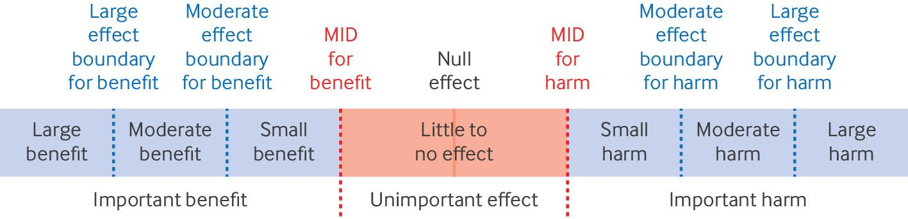
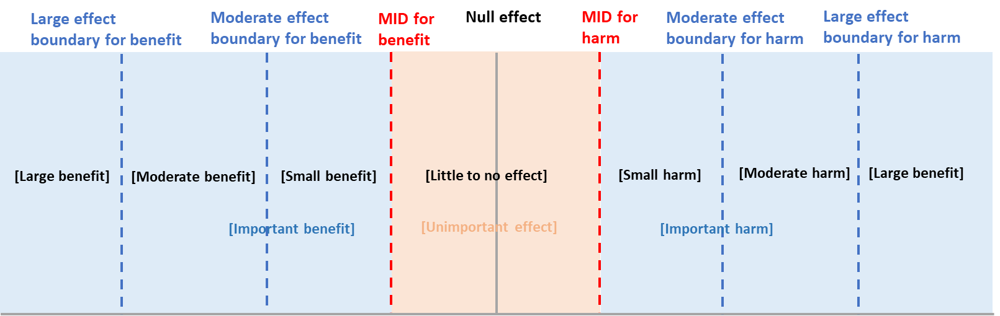
Deciding what it is in which we are rating our certainty requires (ie deciding on the target of the certainty rating) involves three steps. For the first step, GRADE users decide if they are interested in whether an effect is or is not important, or whether a true underlying effect compared with the alternative exists.
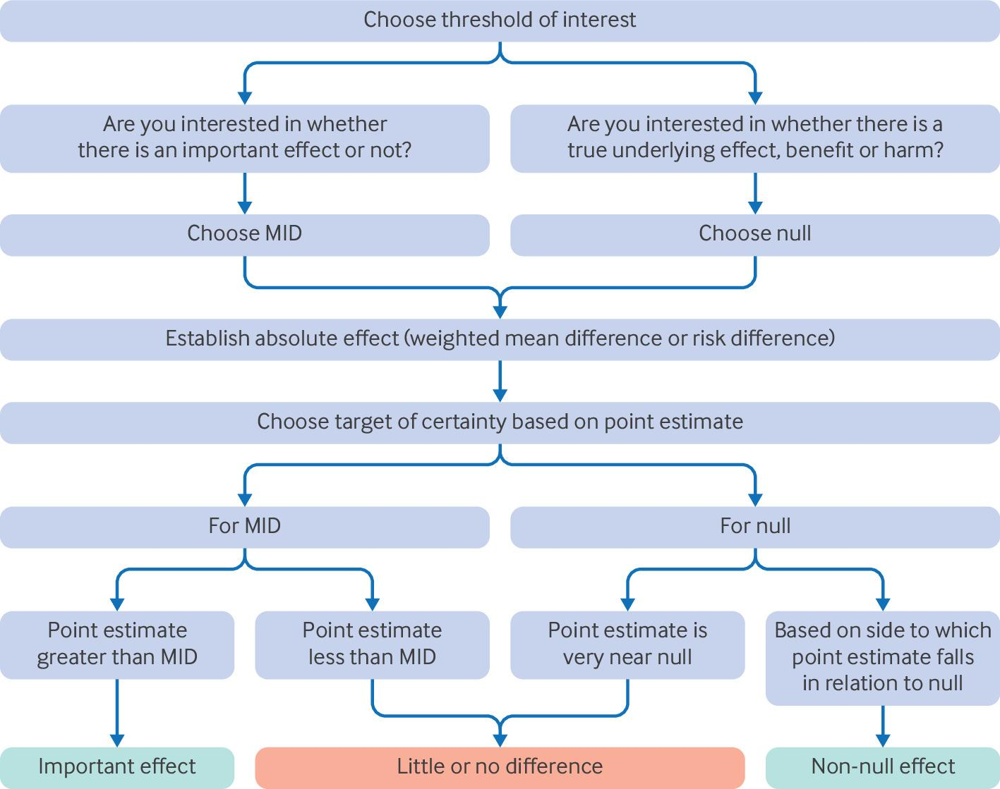
For the next step, GRADE users establish the effect estimates through meta-analysis. An important choice they face is whether to use fixed effect or random effect statistical models in their analysis. Follow this link If you wish to understand key issues review authors must consider when they choose between these approaches. In rating certainty of evidence, GRADE users typically consider absolute rather than relative effects. For binary outcomes, they obtain the best estimate of the risk difference and its 95% CI by applying the relative risk to an estimate of the baseline risk (Calculatiing absolute effects applying relative effects to baseline risk). Appendix 6 Later, in a section focusing on summary of findings tables, we present additional information about absolute effects and how to present continuous outcomes. Finally, GRADE users assess the magnitude of the absolute effect estimate in relation to the chosen threshold. We discuss the process for these steps, illustrated in Fig 4-6, further below.
Assessing if the effect is or is not important (MID as threshold)
When considering whether an effect is important, GRADE users must focus on absolute (ie, risk differences) rather than relative effects. The reason is, as we explained previously, it is absolute rather than relative effects that are important to patients—a 50% relative risk reduction (risk ratio of 0.5) could represent a 1% absolute reduction (from a baseline risk of 2% in control group to 1% in intervention group) or a much larger 20% absolute reduction (from 40% to 20%). If GRADE users are interested in whether an effect is important, they will thus need to make a value judgment about the importance of the outcome and, in particular, the threshold that delineates an important from an unimportant effect (ie, the MID).
The values and preferences that drive this choice should be those of the patients or other target populations, such as the general public. Guideline development and HTA require judgments about how people value the benefits, harms, and burdens of the interventions under consideration. Specifying MIDs, using either established MIDs (most likely to be available for patient reported outcomes such as pain, functional status, or quality of life) or their own estimates (generated from, for example, existing literature or their clinical experience) has proved helpful in facilitating the trade-offs between desirable and undesirable consequences of interventions.
Later, we address in some detail the issues of choosing MIDs for key outcomes. If GRADE users have chosen the MID threshold, and the point estimate from the meta-analysis represents an effect greater than the MID ((a) in 47), systematic review authors will rate their certainty that the true effect is an important benefit (or, if favouring the comparator, an important harm). If the point estimate represents an effect less than the MID ((b) in Fig 4-6), they will rate their certainty in an unimportant (little to no) effect.3
Assessing whether a true underlying treatment effect exists (null as threshold)
For several reasons, the null represents a potentially attractive alternative threshold to the MID in systematic reviews. Evidence on the distribution of values and preferences in the population population of interest is typically limited, making inferences about the MID challenging. Furthermore, systematic review authors may not see their mandate as including the search and interpretation of relevant evidence about MIDs. Finally, systematic review authors may want to leave the value judgments involved in choosing specific MIDs to HTA and guideline practitioners who typically consult a wider group of individuals, and often in a structured way.Indeed, in current practice systematic review authors using GRADE choose the null and MID thresholds with equal frequency.
If GRADE users have chosen the null they will, based on where the point estimate falls in relation to the null, typically rate certainty that a true beneficial or a harmful effect exists. If, however, the point estimate is near the null, because the intuitive inference in such situations is that the true effect represents little to no difference between intervention and control, they will rate their certainty in an unimportant effect ((b) in Fig 4-7). So, although choosing the null usually avoids specifying MIDs, it will not always do so. Appendix 7 issue. The difficulty in altogether escaping considerations of importance when choosing the null as a threshold may – or may not, current systematic review GRADE users choose the null and the MID more or less equally - lead GRADE users to prefer the MID as a threshold.
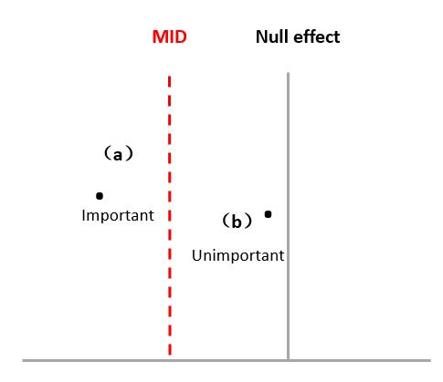
4.2 Rating certainty of evidence: Imprecision
After deciding on the target of certainty rating, GRADE users assess whether limitations exist in any one of five GRADE domains (imprecision, inconsistency, risk of bias, indirectness, and publication bias). The following discussion addresses how GRADE users can make judgments about imprecision.
Imprecision defined
Studies of interventions seek to estimate the true underlying treatment effect. A meta-analysis provides our best estimate of the effect (the point estimate), and the CIs provide the bounds within which the true effect plausibly lies. The most commonly used CI is the 95% CI. The CI's width provides key information about the extent of imprecision, thus informing the impact of random error on certainty of evidence.
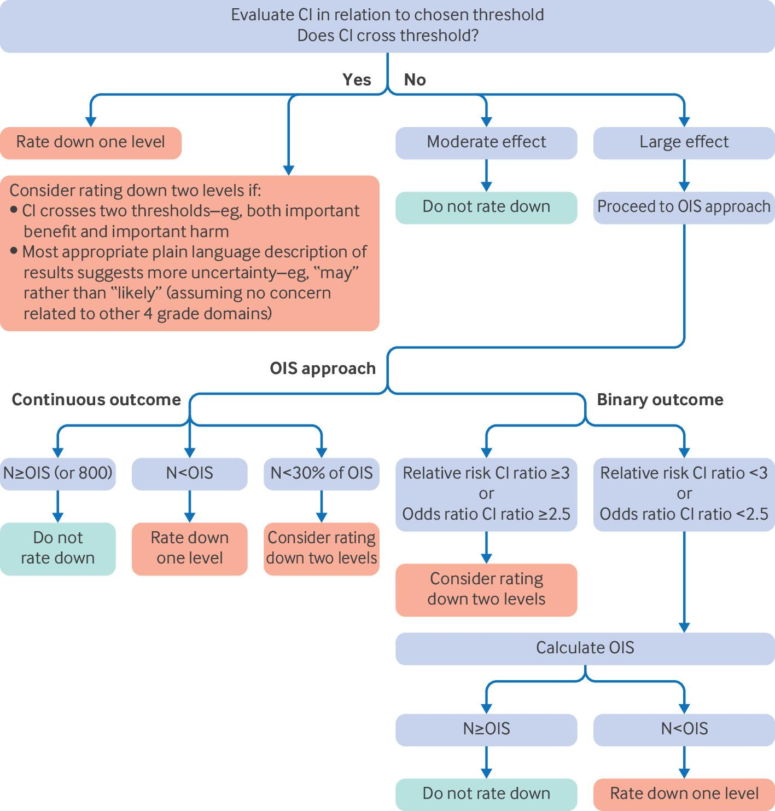
We will now describe our approach to making the judgment of whether the CI is sufficiently wide that GRADE users should rate down for imprecision, and whether they should rate down by one or two levels. Fig 4-8 presents the steps GRADE users take in making judgments regarding rating down for imprecision.
Rating down (or not) for imprecision
When deciding whether to rate down certainty for imprecision, GRADE users will consider whether the CI crosses the chosen threshold. For instance, consider the pooled effect estimate from a hypothetical systematic review of randomised controlled trials illustrated in Fig 4-9. For (a) in Fig 4-9, whether GRADE users are rating certainty for a non-null effect (null being a risk difference of 0%) or an important effect (the MID threshold of 1%), the CI does not cross either threshold and they will not rate down their certainty for imprecision. Assuming they have no concerns about the other four GRADE domains, they will have high certainty of a non-null effect as well as an important effect. For (b) in Fig 4-9, decisions about rating down certainty will differ depending on the threshold. When using the null, as the CI does not cross the threshold, GRADE users will not rate down their certainty for imprecision. When using the MID, as the CI crosses the threshold, they will rate down for imprecision. For (c) in Fig 4-9, whether GRADE users are rating their certainty in relation to the null or the MID, the CI crosses the threshold and they will rate down for imprecision.
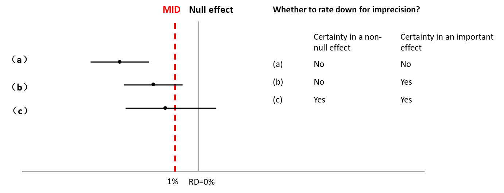
Consider a systematic review of corticosteroids versus no corticosteroids for patients with community acquired pneumonia (Fig 4-10). The meta-analysis of randomised controlled trials reported that corticosteroids yielded 29 fewer deaths per 1000 patients, with a CI from 52 fewer to 6 fewer. If review authors have chosen the null as their threshold, they will rate their certainty that a true mortality reduction exists and will not rate down for imprecision.
If review authors have chosen the MID as their threshold and set the MID at a difference of 10 deaths per 1000 patients (MID1 in Fig 4-10), because the point estimate is greater than the threshold, they will rate down their certainty in an important mortality reduction. Had they chosen an MID of 5 deaths per 1000 patients (MID2 in Fig 4-10), they would not rate down for imprecision because the CI does not cross the MID threshold.
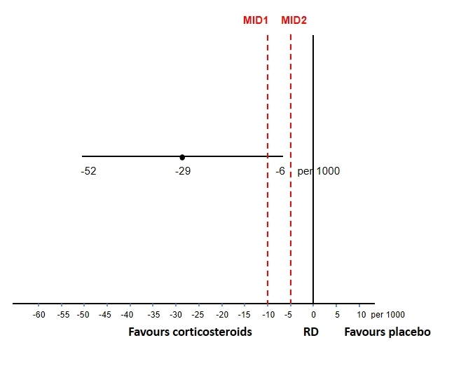
When GRADE users have chosen the MID as their threshold and the point estimate is less than the MID, they will rate their certainty that the true treatment effect is unimportant (ie, little to no effect) (all point estimates in Fig 4-11). As described in the section on assessing whether there is a true underlying treatment effect, when GRADE users have chosen the null as the threshold and the point estimate clearly suggests an unimportant effect (ie, the point estimate is close to the null) they will instead rate certainty in little to no effect by relating the CI to the MID. In either case, they will not rate down for imprecision if the CI crosses neither threshold ((a) in Fig 4-11). If the CI crosses one threshold ((b) in Fig 4-11) or both thresholds ((c) in Fig 4-11) they will rate down for imprecision.
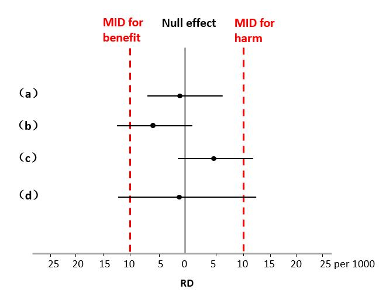
Rating down once or twice for imprecision
As the CI gets wider, GRADE users will become progressively more uncertain about whether the truth is consistent with an important or unimportant effect, or whether it reflects a non-null effect. To reflect the degree of uncertainty influenced by imprecision of evidence, GRADE users can consider rating down one or two levels for imprecision. A role for plain language statements in making decisions Stating results in plain language that both clinicians and patients will easily understand is important in making GRADE optimally useful for clinical practice. GRADE has therefore provided guidance in making such statements (Table 4-1). We will return to these statements in the sixth paper in this series, in which we discuss GRADE summary of findings tables; we introduce them here because they can help decide on rating down once or twice for imprecision.
| Certainty | Plain language summary | Null effect as threshold | MID as threshold |
|---|---|---|---|
| High | Treatment has a benefit, or Treatment improves outcome X | Treatment has a benefit | Treatment has an important benefit, or Treatment has little to no benefit |
| Moderate | Treatment likely has a benefit, or Treatment likely improves outcome X | Treatment likely has a benefit | Treatment likely has an important benefit, or Treatment likely has little to no benefit |
| Low | Treatment may have a benefit, or Treatment may improve outcome X | Treatment may have a benefit | Treatment may have an important benefit, or Treatment may have little to no benefit |
| Very low | We are very uncertain about whether treatment has a benefit | We are very uncertain about whether treatment has a benefit | We are very uncertain about whether treatment has an important benefit or has little to no benefit |
The plain language summary pertains to both beneficial and harmful outcomes. Benefit was chosen here for illustration. GRADE=Grading of Recommendations Assessment, Development and Evaluation; MID=minimal important difference.
Rating down once or twice for imprecision: general principles
When deciding whether to rate down twice, two things are worth considering. The first is whether the CI crosses more than one threshold (eg, includes both important benefit and important harm). The second, considering GRADE’s plain language, is whether the most appropriate message that a particular effect likely exists or that it may exist.
Consider a systematic review comparing reduced versus standard dose corticosteroids for patients with vasculitis. For the outcome of mortality, the authors report a reduction in deaths of 21 per 1000 and a 95% CI that includes a 60 per 1000 reduction but also a 36 per 1000 increase (Fig 4-12). If the authors used an MID of 1% they would rate their certainty in an important effect. Given that the CI crosses the MID threshold they would rate down for imprecision.
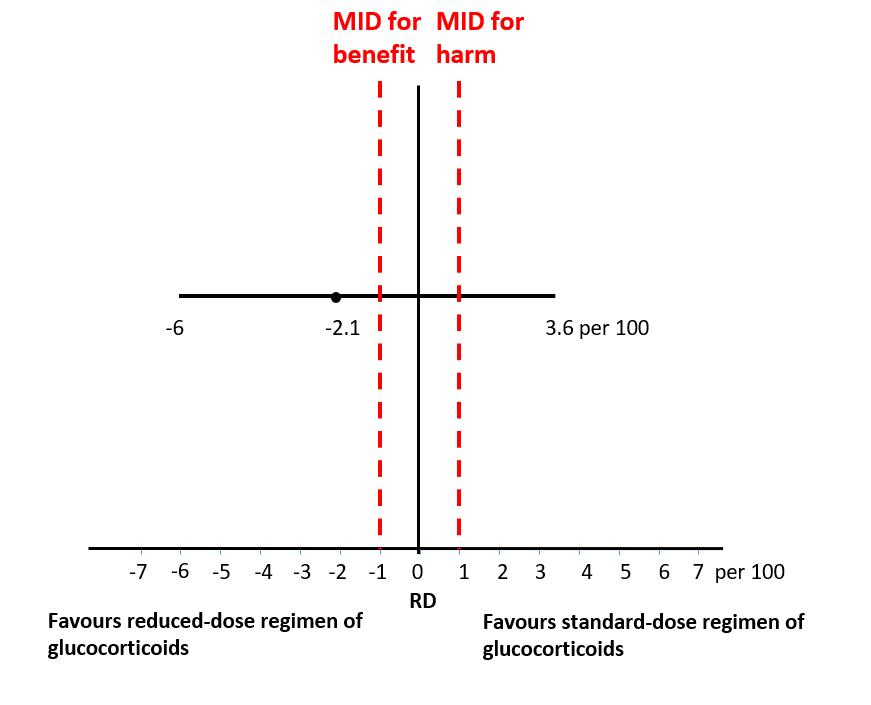
Moreover, the width of this CI would prompt the review team to consider rating down twice for imprecision. Indeed, because the CI not only crosses the MID for benefit but also includes an important harm, they would rate down twice for imprecision. Thus, even before considering any other reason for rating down, the authors have only low certainty evidence that the lower dose regimen results in an important reduction in mortality (the target of their certainty rating).
The second consideration that bears on the decision about rating down once or twice has to do with the most suitable plain language statement that accompanies the certainty of evidence. Consider the example of corticosteroids for patients with vasculitis that includes a CI ranging from a 6% reduction to a 3.6% increase. Assuming systematic review authors do not have concerns on the other GRADE domains, would it convey the optimal message about certainty stating that the lower dose regimen likely results in an important reduction in mortality (the statement that would accompany rating down once) or that it may result in an important reduction in mortality (the statement that would accompany rating down twice). If the review authors considered the latter statement more appropriate (as in our view they should) they would rate down twice for imprecision. This highlights that it can be useful for GRADE users to consider what would be the most appropriate statement to communicate to their target audience.
The two considerations also apply to imprecision judgments when GRADE users choose the null as the threshold of interest. For example, consider a situation in which users rate their certainty in a benefit (threshold the null) but the CI also includes clearly important harm. The finding that the CI is consistent with both benefit and important harm motivates a plain language summary stating that the intervention “may” result in a benefit, and rating down two levels for imprecision.
Rating down for imprecision when effects are large and sample size limited
When the CI crosses the threshold or thresholds of interest, GRADE users will rate down for imprecision and do not need to consider sample size. If the CI does not cross the threshold, however, and the effect is large, they must be aware that large effects are unusual in interventions tested in randomised controlled trials. Attempts to replicate results of early studies suggesting such effects often fail. Thus, we suggest that when the CI does not cross the threshold or thresholds of interest and effects on binary outcomes are implausibly large (certainly relative risk reduction >40%, possibly >30%), GRADE users should consider rating down for imprecision if the sample size and number of events across all contributing studies are limited.
Our criteria for “limited” rely on routine sample size calculations that would be undertaken when planning a single randomised controlled trial (Assessing imprecision in the presence of a large effect) (Appendix 8). For binary outcomes, these involve specifying the acceptable error rates: α (typically 0.05) and β (typically 0.20), the control group event rate (chosen from the context), and a modest relative risk reduction, typically 20% or 25%. We call the sample size that emerges from the calculation the optimal information size (OIS).
If the total sample size of all the studies included in a meta-analysis exceeds the OIS, one does not rate down; if the total sample size proves less that the OIS, one rates down for imprecision. GRADE users can consult one of many online calculators to calculate a particular OIS. (eg, https://www.openepi.com/SampleSize/SSCohort.htm). GRADE users can make the same calculation for continuous variables by specifying the smallest difference between intervention and control that one would want to avoid missing (ie, the MID) and using the standard deviation from one of the existing studies.
An alternative, a rule of thumb, would suggest that to not have concerns about imprecision (ie, to not rate down) would require 400 patients per group (total sample size 800). A previous GRADE article provides further details and examples of OIS exploration for both binary and continuous variables (Assessing imprecision in the presence of a large effect).
Conclusion
The process of assessing the certainty of evidence requires choosing a threshold, either the null or the MID, and then choosing the target of certainty by noting the location of the point estimate in relation to the threshold. When the initial choice of threshold is the null, if the point estimate is close to this threshold, GRADE users rate certainty in little to no effect. For judging imprecision, if the CI does not cross the threshold, GRADE users typically do not rate down for imprecision; if it crosses the threshold, they do. GRADE users may rate down twice when the CI crosses more than one threshold, in particular when it crosses thresholds of important benefit and important harm. Finally, when the CI does not cross the threshold but the effect is large, Grade users invoke the OIS and rate down for imprecision if the total sample size fails to meet the OIS criterion.
4.3 Rating certainty of evidence: Inconsistency
What do we mean by inconsistency?
By inconsistency we mean unexplained variability in results across studies. We are particularly concerned about inconsistency that is sufficiently great that, depending on which of the varying results represents the truth, inferences for clinical practice would differ. Authors writing about inconsistency sometimes use the term heterogeneity, particularly when referring to statistical tests related to inconsistency.3 In addressing what we mean by inconsistency, because of how GRADE users sometimes get confused, we will clarify what we do NOT mean by inconsistency.
Ratings of certainty pertain to bodies of evidence summarised in lys systematic reviews. The GRADE process begins with construction of a structured clinical question. Studies addressing a particular question are certain to vary in patients enrolled, aspects of the intervention and comparator chosen, and the way the outcome is measured, and such variability is often appreciable. GRADE users may intuit that such variability (ie, inconsistency in PICO elements) compromises the certainty of evidence from a systematic review.
This, however, is rarely the case. Indeed, if effects are similar from study to study, variability in the PICO elements enhances the applicability of the pooled effect to a wider range of clinical contexts. If effects vary across studies, differences in the PICO elements provide an opportunity to explore the possible sources of the inconsistency in results. Thus, inconsistency in PICO elements is not what decreases confidence in the evidence, it is variability in results.
Choosing the right measure of effect when assessing inconsistency
Binary outcomes: variability in relative versus absolute effects As we have previously pointed out, relative treatment effects seldom vary across patient subgroups such as old and young, male and female, or less sick and more sick. However, given that such patient characteristics are often associated with substantial differences in baseline risk (ie, probability of experiencing the outcome in the comparator group), even in the presence of constant relative treatment effects across such patient groups, the resulting absolute treatment effects will differ substantially. The hypothetical example in Fig 4-13 illustrates the situation. Here, the relative risk reduction is constant, at 33%, across low, medium and high risk groups. Because of the substantial differences in baseline risk, the risk difference between treated and untreated patients varies substantially, from 10% in high risk patients to 1% in low risk patients.
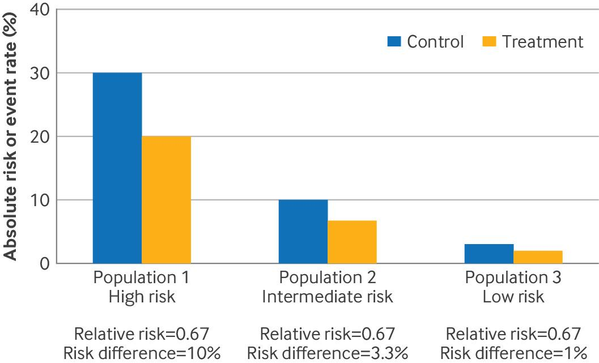
Despite risk differences being more important to patients than relative risks, authors of randomised trials and meta-analyses typically highlight relative rather than absolute effects. They do so because of the typical consistency in relative risks and the expected variability in risk differences (Fig 4-13). Greater consistency in results is desirable: it increases confidence in the pooled estimates of effect. Thus, the anticipated consistency of relative effects and variability of absolute effects is the reason why, in GRADE summary of findings tables, authors estimate risk differences in each relevant patient group by applying relative risks to baseline risks, and why guideline authors may offer different treatment recommendations for individuals at low, medium, and high risk. Finally, because inconsistency in absolute effects is ubiquitous and inconsistency in relative effects is rare, we are concerned with inconsistency in relative rather than absolute effects.
Continuous outcomes
Continuous outcomes are typically measured as absolute effects—thus, when considering inconsistency, looking at relative effects is typically not an option. For example, duration of illness, hospital length of stay, functional status, or quality of life are typically evaluated as mean differences. Inconsistency in mean differences across studies can lower certainty in evidence in the same way as inconsistency in relative effects does for binary outcomes.
Core GRADE's approach to preparing for inconsistency
In this section, we discuss how, when thinking ahead to possible inconsistency in results, GRADE users formulate a plan to best deal with the inconsistency they may ultimately find. When observing relative effects for binary outcomes and absolute effects for continuous outcomes across studies in a body of evidence, several reasons for inconsistency may exist. These include random error and differences in population, intervention, comparison, and outcome (PICO) elements. Hypotheses may be able to explain these differences—this is the hope when preparing for the possibility of large inconsistency—or they may not. If they do explain inconsistency, GRADE users will provide separate evidence summaries for each subgroup and make judgments about inconsistency within each subgroup. If the hypotheses do not explain differences, the unexplained variability in effects decreases the certainty of evidence.
Three options for possible subgroups with different intervention effects
When reflecting on the possibility that effects differ across patient subgroups (eg, effects may differ in old versus young people) or across interventions subgroups (eg, oral versus parenteral antibiotic treatment), review authors face a potential problem. Selecting a narrow range of subgroups in the PICO will always sacrifice applicability, and often precision. Selecting a broader range of patient and intervention subgroups will enhance generalisability and precision but runs the risk, if effects differ substantially, of pooling inappropriately across patient or interventions subgroups.
To solve the problem GRADE users must, for each subgroup, distinguish between three scenarios: one has no reason to suspect differences in effects across subgroups; one is confident that effects vary across subgroups; or one has good reason to suspect subgroup differences but is uncertain.
Take, for example, two different age groups: young and old. The following are the three scenarios and corresponding actions they would mandate: 1.Previous research provides little support for the possibility that effects differ between old and young people. In this scenario, review authors would choose a broad age range for the PICO, and the findings would apply to both age groups.
2.Previous research has given reason to be confident that the relative effects on older versus younger people differ. Accordingly, one would choose a narrow age range for the PICO (eg, older people) or create two separate PICOs and sets of recommendations, one for older people and the other for younger people.
3.Previous research plausibly suggests that effects differ between old and young people, but one is uncertain. One would then choose a broad age range in the PICO and conduct subgroup analysis or meta-regression to explore the possible impact of differences in age.
| Scenario | Implications for PICO construction | Example |
|---|---|---|
| 1. Previous research provides no compelling evidence that effects differ across patient or intervention subgroups (no subgroup hypothesis) | Combine all subgroups (single estimate of effect) without a subgroup hypothesis | The World Health Organization has generated several recommendations regarding the management of patients with covid-19. The guideline panels inferred that effects were very likely to be similar in men and women and thus in all their recommendations provided a single estimate for men and women¹⁰ |
| 2. Previous research suggests that effects differ across patient or intervention subgroups (subgroup effects are presumed to exist) | Narrow PICO to one subgroup, or construct two separate PICOs for each subgroup | A guideline panel addressing optimal transfusion thresholds in anaemic patients considered that the biology differed between children and adults and therefore looked at the evidence separately and provided separate recommendations¹¹ |
| 3. Previous research plausibly suggests that effects differ across patient or intervention subgroups, but one is uncertain (directional subgroup hypothesis) | Initially combine all subgroups (single estimate of effect), but also provide and then test a directional subgroup hypothesis | A systematic review comparing immediate versus delayed antiretroviral therapy in patients with a concomitant diagnosis of HIV and tuberculosis tested whether the impact of early versus delayed treatment on mortality differed between those with higher and lower CD4 cell counts.¹² A previous trial suggested that hypothesis, including a clear direction, but for another outcome¹³ |
PICO=population, intervention, comparison, and outcome.
We recommend that to maximise precision and generalisability, review authors frame their PICOs broadly. In doing so, however, they must prepare themselves for the possibility of inconsistent results across studies. One way to prepare is to choose the third scenario when constructing the PICO. We now present details of how to deal with this third scenario.
Need for a priori hypotheses with a specified direction
Preparation for the possibility of inconsistency in results involves generating a small number of well chosen a priori hypotheses to explain that inconsistency. Subgroup effects exist when the effects of an intervention versus a comparator differ according to characteristics of patients (eg, older versus younger, more sick versus less sick) or differences in interventions (eg, longer versus shorter duration of therapy). Thus, authors may postulate subgroup effects according to different patient groups or interventions.
Reviewers should base their hypotheses on previous evidence (eg, from a related trial, meta-analysis, or cohort study) or thorough understanding of the underlying biology, and they should include the direction of the subgroup effect (hypothesising, for example, not just that effects may differ across patient ages, but also that effects will be larger in old people than in young people). Postulating more than a small number (ideally three or fewer) of directional hypotheses will increase the likelihood of chance findings (spurious associations), thus undermining the credibility of any subgroup effects.
For instance, in the systematic review of when to start antiretroviral therapy in patients with a concomitant diagnosis of tuberculosis and HIV, the authors made only a single a priori hypothesis in considering mortality. They postulated that effects may differ depending on CD4 T cell counts using a threshold of <0.050×109 cells/L v >0.050×109 cells/L. Their hypothesis was based on previous evidence of a higher incidence of adverse immune reactions in patients with a lower CD4 T cell count.
One might reasonably presume the direction of the subgroup effect (early antiretroviral therapy is worse in those with lower CD4 T cell counts). In this case, as it turned out, and contrary to the hypothesis, the results suggested that if there was a benefit of early therapy it was more likely in those with a low CD4 T cell count (P=0.12 for interaction). The example thus highlights how the review authors prepared themselves for the possibility of inconsistent results through specifying a single, directed subgroup hypothesis based on related evidence. The example also highlights that, without a subgroup analysis, GRADE users should exercise caution before concluding that effects differ between subgroups.
The ability to predict the direction of a subgroup effect provides a useful criterion when deciding between the first scenario (broad PICO, no subgroup analysis) and third scenario (broad PICO and subgroup analysis). If one cannot confidently specify the direction of the potential subgroup effect, one should choose the first scenario rather than the third. Consistent with our recommendation of a small number of compelling subgroup hypotheses, we discourage post hoc exploration of possible subgroup effects. There may be situations, however, in which high (if unwarranted) interest from clinical audiences demands conduct of subgroup analyses. Investigators can then still specify a best guess direction, label analyses as exploratory, conclude low credibility whatever the results, and ultimately not count these analyses against the credibility of appropriately pre-specified hypotheses.
Criteria for judging serious inconsistency
Having addressed how Core GRADE users should plan for dealing with inconsistency in results, we ill now address how they will implement their plan (see Fig 4-14). In the three following sections we describe how GRADE users can determine whether inconsistency is of sufficient concern to consider rating down for inconsistency. If they do find important inconsistency, they should look to their a priori hypotheses to see if they can explain that inconsistency—a process that will include rating the credibility of any possible subgroup effects they identify. A subsequent section deals with this issue of subgroup explanations of variability in results. If only one eligible study exists, GRADE users will not rate down for inconsistency, although if the authors provide the data then they may still address the possibility of subgroup effects.
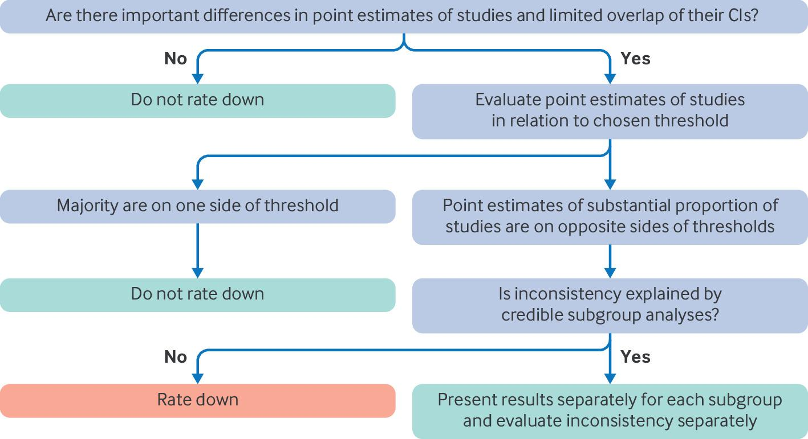
Three visual criteria from forest plots
Consider the hypothetical body of evidence in Fig 4-15. When considering whether studies yield similar or different results, most observers of these forest plots will quickly conclude that results in the top half ofthe figure are consistent whereas results in the bottom half are inconsistent. Aspects of the results that justify these inferences are similarity versus differences in point estimates, the extent of overlap in confidence intervals (CIs), and the relation of point estimates to the threshold of certainty rating.
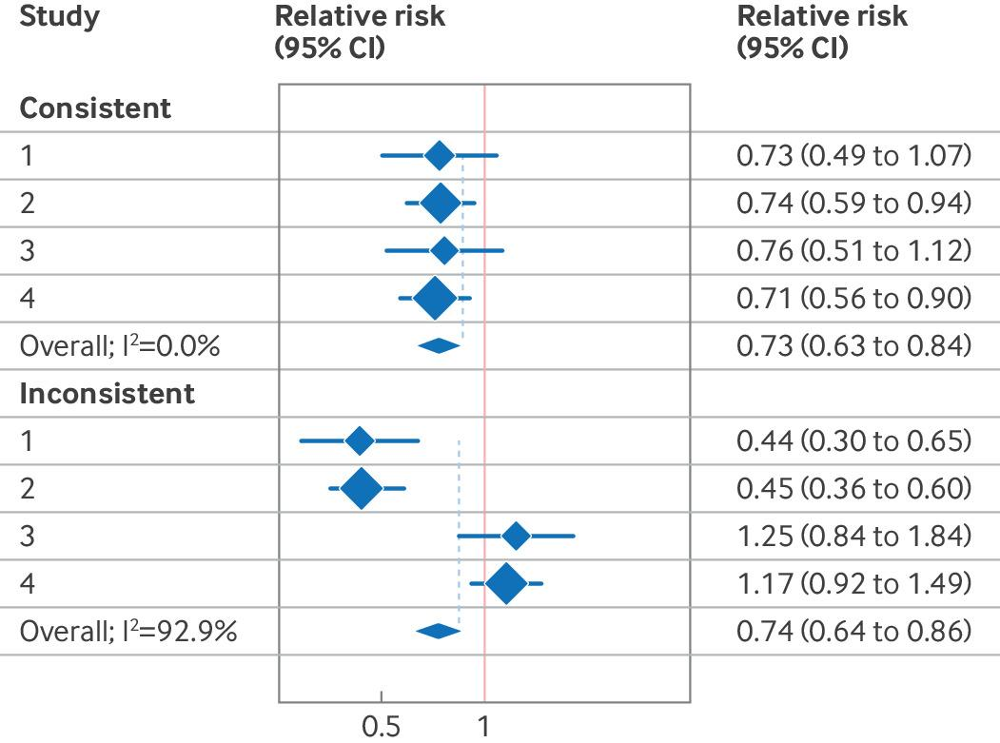
Point estimates—One is more inclined to consider rating down for inconsistency when point estimates differ substantially between studies. In figure 15, the point estimates in the top half of the figure are similar, ranging from 0.71 to 0.76. The similarity in the point estimates suggests no need to consider rating down for inconsistency. In contrast, in the bottom half of Fig 4-15, two studies suggest substantial treatment effects—relative risk reductions >50%—and two other studies suggest modest harms, 17% and 25% increases in relative risk. The large differences in the point estimates of the two pairs of studies suggest rating down for inconsistency.
Overlap of CIs—One is more inclined to rate down for inconsistency if the CIs of included studies do not show substantial overlap. In the top half of Fig 4-15, the CIs of the four studies are largely overlapping. This overlap suggests no need to consider rating down for inconsistency. In contrast, in the bottom half of Fig 4-15 the CIs between the first and second pairs of studies are completely non-overlapping. This provides a strong rationale for rating down for inconsistency.
Relation of point estimates to the threshold of certainty rating—Infrequently, GRADE users will find appreciable inconsistency using the first two criteria, but that point estimates largely lie on the same side of a chosen threshold (the null—ie, no difference between intervention and comparator) or the minimal important difference (MID)). In these situations, they will be less inclined to rate down for inconsistency.
Whichever threshold one uses, in the top half of Fig 4-15 all studies are on one side of the threshold (no need to consider rating down for inconsistency). In the bottom half of figure 15, the pairs of studies are on opposite sides of either threshold, with one pair showing benefit and the other showing harm, thus the need to consider rating down
While, as here, we may initially assess inconsistency using relative risks, GRADE users must establish MIDs only on absolute risks. In this hypothetical example, the authors have, considering the baseline risk of the outcome, established that a relative risk reduction of about 15% will translate into a minimally important absolute effect of 1%. Appendix 9 process (Generating an MID from a relative risk threshold).
Applying visual criteria: how choice of threshold affects judgments of inconsistency
The three key criteria for judging inconsistency— similarity of point estimates, overlapping of CIs, and relation of results to the chosen threshold for rating certainty—apply equally well to continuous outcomes. Consider Fig 4-16, which depicts the results of a meta-analysis evaluating the impact of local infiltration analgesia on postoperative pain in patients after total knee arthroplasty (adapted from a figure we used in a previous GRADE article to illustrate these criteria).14 1
Consider the appropriate inference if authors of the systematic review of this evidence chose to rate their certainty with respect to the null. The pooled estimate clearly excludes the null, and the point estimates of all but one study support that inference. Thus, there is no reason to rate down for inconsistency.
However, consider if the review authors chose to rate their certainty with respect to the MID and selected a value of 10 mm. Now, five studies show values below the threshold and eight at or above the threshold. This inconsistency undermines the inference of an important effect suggested by the pooled estimate (14 mm) and would warrant rating down for inconsistency. Although this example highlights how GRADE users should attend to the relation of point estimates to the threshold of certainty rating, when point estimates differ substantially and CIs do not overlap, they will seldom find compelling reason to invoke this additional criterion.
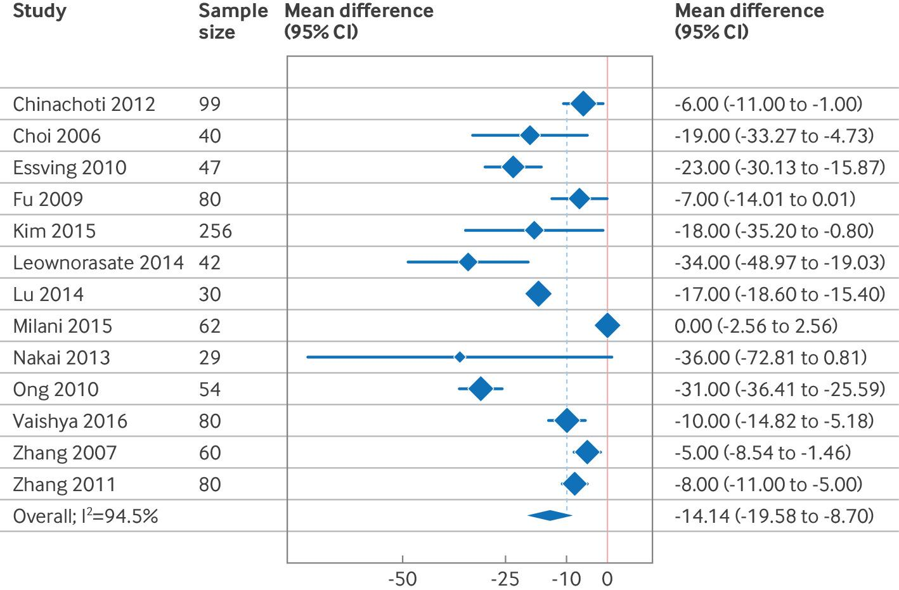
One criterion for statistical assessment
A statistical criterion, I2, describes the percentage of the variability in effect estimates that is due to heterogeneity rather than sampling error (chance), and may complement the three visual criteria. The lowest possible I2, 0%, tells us that chance easily explains the difference between studies—the conclusion in the top half of Fig 4-15. As I2 approaches the highest possible value, 100%, the likelihood that chance alone explains the variability observed becomes extremely small. This is true of the bottom half of Fig 4-15 in which I2 is 93%.
I2 may, however, prove misleading. In particular, if the included studies have narrow CIs the associated I2 may be misleadingly large. Moreover, if the point estimates are mostly on one side of the threshold of certainty rating, the high I2 will be irrelevant. For instance, in Fig 4-16 the high I2 value of 94.5% suggests enormous inconsistency. Nevertheless, when using the null as the target of certainty ratings, 12 of the 13 studies showed mean differences favouring the intervention and one would conclude no problematic inconsistency.
It is natural that review authors desire hard and fast rules for interpreting I2. The limitations of the statistic make such rules problematic. The best we can do is suggest that one will seldom see serious inconsistency with I2 values <30%, and as I2 rises beyond that value, the possible need to rate down certainty increases.
The burden of proof lies with those claiming a subgroup effect
We have pointed out that relative effects overwhelmingly tend to be similar across subgroups, and testing a large number of subgroup hypotheses results in a high risk of spurious findings. In general, GRADE users should be sceptical about subgroup effects, and the burden of proof lies with those claiming such effects. Nevertheless, true subgroup effects do sometimes exist, and GRADE users require methods to identify such instances and distinguish them from spurious associations.
Criteria for judging the credibility of subgroup effects
For almost 50 years methodologists and statisticians have been writing about how to distinguish credible from spurious subgroup claims. In the following, we apply the key lessons from this inquiry to an example. In an exploration of subgroup effects, authors of a systematic review postulated that randomised trials of blockers showing greater reductions in heart rate would show larger relative risk reductions in deaths among patients with heart failure (Using ICEMAN to assess McAlister et. al. systematic review). The authors found an apparent effect modification: for every five beats per minute reduction in heart rate with blocker treatment, they found a commensurate 18% reduction in the risk of death. The question arises: is this a true or spurious subgroup effect?
In deciding on the credibility of subgroup effects, one issue in systematic reviews and meta-analyses is whether the effect modification was based on a comparison between studies (eg, blockers achieved different reductions in heart rate in different studies and this is the basis of the analysis) or a within study comparison (the same study included interventions with greater and lesser heart rate reduction, achieved, for example, by including groups with larger and smaller doses of blockers). Within study comparisons are far more compelling than between study comparisons. In this case, however, the analysis relies exclusively on between study comparisons, reducing the credibility of the apparent effect modification.
Perhaps the most important single issue in addressing a putative subgroup effect is whether chance can explain the difference in effect between subgroups. The lower the P value associated with the appropriate statistical test—referred to as a test of interaction—the less likely chance is an explanation and the more credible becomes the postulated effect. However, this statistical criterion can be severely undermined if authors have not prespecified subgroup analyses, have conducted a large number of subgroup analyses, or report only selected results. Violation of any of these criteria greatly increases the probability that chance rather than a true subgroup effect is responsible for apparent differences between groups, and thus renders the P value associated with the test of interaction far less trustworthy. In this case the authors specified the subgroup analysis in advance but tested 12 hypotheses with a P value of 0.006 for interaction
A team of methodologists has developed the first formal Instrument for assessing the Credibility of Effect Modification ANalyses (ICEMAN, www.iceman). This instrument addresses all the issues we have discussed, along with several others, and is straightforward to apply failure (Using ICEMAN to assess McAlister et. al. systematic review).
Addressing the results of the subgroup credibility exploration
If GRADE users conclude that the putative subgroup effect is of low or very low credibility, they will present results only for the summary of all studies, rating inconsistency for the entire population. However, a conclusion of moderate or high credibility warrants the creation of separate PICO questions for each subgroup, separate presentation of results for each subgroup, separate ratings of certainty considering all five domains of rating down, and separate conclusions in keeping with each estimate of effect.
A result near the threshold between low and moderate credibility presents challenges. One option is to present both the overall and the subgroup results in the summary of findings table. A second is to present only one of the overall and subgroup results in the summary of findings table and report, in the text, a briefer summary of the one not chosen for the summary of findings table. Whatever they choose, authors should acknowledge the close-call nature of the credibility assessment.In the example of blockers to reduce mortality in patients with heart failure, the conclusion regarding credibility falls in the range of moderate credibility. Because the effect modifier was a continuous variable, the authors chose, rather than an arbitrary threshold, the more powerful continuous meta-regression approach to the analysis. Their results thus suggest that the greater the effect in reducing heart rate, the greater the mortality reduction. The moderate credibility of the effect suggests possible results of shared decision making with patients and their clinicians: use doses of blockers that substantially but safely reduce the patients’ heart rate.
Conclusion
When GRADE users construct PICO frameworks that are broad with respect to both patients and interventions—as we believe they should—they must prepare for the possibility of inconsistent results. They do so by identifying a priori hypotheses to explain inconsistency, including a postulated direction.
Having decided on their subgroup hypotheses, GRADE users address the key criteria for evaluating inconsistency. Examining the forest plot, they note the magnitude of differences in point estimates, the extent to which the CIs overlap, and where the point estimates lie in relation to the target of their certainty rating. The greater the variability in point estimates and the less the overlap of CIs, the more likely there is problematic inconsistency. The decision, however, requires consideration of the chosen threshold for certainty rating: whether the null or the MID, the greater the extent to which, in the presence of minimally overlapping CIs, point estimates fall on opposite sides. Fig 4-14 summarizes this process.
4.4 Rating certainty of evidence: Risk of Bias
What you will learn in this section
This section will help you understand how to assess risk of bias in individual studies and across bodies of evidence, recognize publication bias, and appropriately rate the certainty of evidence from non-randomized studies.
The information in this section will enable GRADE users to understand the definition of risk of bias, choose appropriate instruments for assessing risk of bias of individual studies, rate risk of bias across the body of evidence by considering the relative contribution of low and high risk of bias studies to the pooled estimate and the similarities or differences in their results, understand the causes of and approaches for detecting publication bias, and make appropriate judgments about when to rate up the certainty of evidence from non-randomized studies of interventions (NRSI, synonym observational studies).
Before starting, we have to begin with a warning and a suggestion. The systematic review community has become aware of the distressing frequency of studies that are completely untrustworthy because of inaccurate reporting of methods or outright fraud. Systematic review authors must therefore consider beginning with a check for such studies. A number of instruments are available [1][2]. For studies that fail this check and are likely, or highly likely. to be untrustworthy, reviewers should discard them altogether or include them only in a secondary sensitivity analysis.
What do we mean by risk of bias
We define bias as a systematic deviation from the underlying true effect of an intervention on an outcome of interest in a given population. Both randomised controlled trials and NRSI may be subject to limitations in design or execution that can bias the results. Well designed studies will institute safeguards, such as centralised randomisation and blinding, that minimise risk of bias,. To the extent studies do not implement these safeguards, risk of bias increases. If serious limitations exist among the studies dominating the pooled estimate of effect, Core GRADE users will typically rate down the overall certainty of evidence for risk of bias.
Issues of risk of bias, and thus safeguards against bias, differ between randomised controlled trials and NRSI. We will first deal with randomised controlled trials and then NRSI. The subsequent discussion will address how GRADE users should look across the body of evidence to decide whether or not to rate down for risk of bias.
Risk of bias in individual studies: Randomized trials
Box 1 summarises the risk of bias items that randomised controlled trial risk of bias instruments appropriately identify and that GRADE users may want to consider.
Box 1: Risk of bias in randomised trials
Most commonly included and important items across various randomised controlled trial risk of bias tools
- Inadequate generation of random allocation sequence
- Inadequate concealment of allocation
- Not blinding participants
- Not blinding healthcare providers
- Not blinding data collectors
- Not blinding outcome assessors
- Not blinding data analysts
- Missing outcome data
Less important items variably captured across randomised controlled trial risk of bias tools
- Imbalance in co-interventions between groups
- Difference in outcome assessment or data collection between groups
- Difference in follow-up time, frequency, or intensity of outcome assessment between groups
- Deviation from intention-to-treat analysis
- Selective outcome reporting
- Early termination for benefit
Although review authors can choose from one of many instruments that address risk of bias in parallel group randomised controlled trials, two rigorously developed instruments that address limitations of their predecessors merit particular attention. One, Cochrane's tool for assessing risk of bias in randomised trials, RoB 2, is methodologically sophisticated but has limitations of complexity and difficulty in application. Its sophisticated algorithms and the new terminologies it introduced may contribute to these limitations. Studies have reported low interrater reliability of RoB 2 and challenges in implementation. RoB 2 nevertheless includes features that may appeal to those who want to go beyond Core GRADE.
In contrast, ROBUST-RCT was inspired by the same motivation as Core GRADE: to achieve maximal simplicity without sacrificing methodological rigour. Strengths of the new instrument include preparatory systematic surveys of existing instruments and of meta-epidemiological studies of risk of bias, and extensive pre-testing with both junior and experienced systematic reviewers.
ROBUST-RCT includes six core items addressing random sequence generation, allocation concealment, blinding of participants, blinding of healthcare providers, blinding of outcome assessors, and missing outcome data, as well as eight optional items. The instrument provides two approaches to addressing missing outcome data. Those who want to go beyond Core GRADE may consider a more sophisticated approach that is beyond Core GRADE 11 that involves looking across results from all studies (Aleternative approach to assessing missing outcome data).
Failure to ensure methodological safeguards may not lead to risk of bias (eg, blinding of participants is irrelevant in a trial enrolling neonates). ROBUST-RCT addresses this issue by including two steps for assessing risk of bias: firstly, evaluating whether a methodological safeguard has been implemented (eg, whether participants were blinded) and, secondly, judging risk of bias (eg, whether a lack of blinding actually increased bias).
Developers of ROBUST-RCT will provide updates about the instrument at https://www.clarityresearch.ca/ robust-rct.
Some GRADE users with previous positive experience using one of the other available RoB evaluation instruments may value familiarity and continue with its use. Whatever instrument they choose, GRADE users will assess the extent of risk of bias associated with each item for each outcome in each individual study and subsequently rate each outcome- or if the same for all outcomes, for the entire study - as low or high risk of bias.
Risk of bias in non-randomized studies
Cohort and case-control studies
When, for a particular outcome, randomised trials do not exist or yield only low or very low certainty evidence, GRADE users consider using NRSI for assessing the effects interventions.
Box 2: Risk of bias in non-randomised studies of interventions
- Different eligibility criteria or selection of participants between comparison groups such that prognostic factors for outcomes of interest are differentially distributed in intervention and control groups
- Inaccurate measurement of interventions
- Inappropriate measurement of outcome
- Inadequate control of confounders (prognostic factors for outcomes of interest differentially distributed in intervention and control groups):
- Inaccurate measurement of confounders
- Inadequate adjustment for confounding
- Missing outcome data
- Selective outcome reporting
NRSI include many study designs, of which the most common are cohort and case-control. Cohort studies compare individuals who have received a treatment with those who have not and follow them for the development of the outcomes of interest. Case-control studies identify individuals who have and have not experienced an outcome and then ascertain whether or not they have received the intervention of interest. Box 2 presents key risk of bias issues in NRSI.
A large number of instruments are available for assessing risk of bias in NRSI. Core GRADE users might consider the relatively simple, straightforward Newcastle-Ottawa quality assessment scale or modifications of that instrument for both cohort and case-control studies developed by the CLARITY group.
ROBINS-I (Risk Of Bias In Non-randomised Studies-of Interventions) version 1 and the revised version 2 represent another option for risk of bias assessments in NRSI. Studies have, however, documented that teams often do not use ROBINS-I version 1 correctly, time to complete the instrument is problematic and usability is poor, questions are misunderstood, instructions are unclear, and overall application is demanding.30 Our own experiences, and the experience of many of our colleagues, support these observatons. ROBINS-I is not, therefore, well aligned with Core GRADE principles. The instrument may nevertheless appeal to GRADE users open to going beyond Core GRADE assessment.
Case series and single arm trials
Case series or single arm trials that include only individuals who receive the intervention of interest and not those who do not represent another type of non-randomised study design in which the certainty of evidence rating starts from low. Because unbiased assessment of intervention effects requires contemporaneous comparisons of treated with untreated individuals, comparisons that are lacking in case series, for such studies one systematic reviews of case series one almost always rates down from low to very low. Thus, although an instrument for assessing risk of bias of case series exists, such assessment is generally not needed when GRADE users assess effects of interventions. Results from single arm trials are often compared with external controls, typically historical (eg, comparing survival rates for a new cancer treatment with the survival reported previously with other treatments). Such comparisons are analogous to cohort study designs but do not allow adjusted analysis, and are thus almost always at high risk of bias.
Case series and single arm trials: harms only in intervention group, a special case
Interventions for which harmful effects are restricted to those who receive treatment represent a special case. For instance, only patients who undergo surgery can experience surgical complications. This is also true for other invasive procedures. In these cases, the event rate in the control population is either zero or extremely close to zero. Because of this, a well done single arm study of patients receiving the intervention will provide high certainty evidence of harms that only occur in patients receiving the intervention.
For example, a study using a large administrative database including more than 97 000 individuals who underwent an outpatient colonoscopy identified all those who were admitted to hospital with intestinal bleeding or perforation within 30 days. Because the spontaneous occurrence of such events in any given 30 day period in individuals not undergoing colonoscopy is very unusual, the study provides an accurate estimate of major complications. Thus, for colonoscopy adverse events of bleeding (1.64 per 1000) and perforation (0.85 per 1000), the results provide the same low risk of bias estimates as we find in rigorous randomised controlled trials.
Deciding on low or high risk of bias in individual randomized controlled trials or NRSI
The extent of risk of bias in an individual study represents a continuum from minimal to extremely serious risk of bias. For simplicity, however, GRADE users can assess the overall risk of bias in individual studies as low or high. This judgment requires a threshold differentiating the two categories and the acknowledgment of close call situations (Fig 4-17). The arrows in Fig 4-17 are a reminder that risk of bias may be close to a chosen threshold and that close call situations may bear on subsequent decisions.
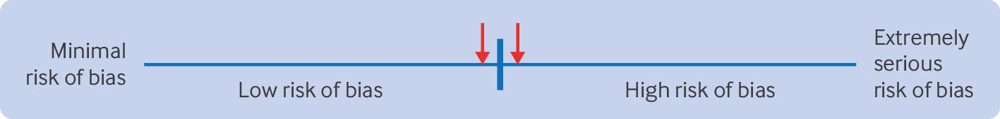
For example, consider the outcome of all cause mortality in a randomised controlled trial not using blinding and in which randomisation is concealed, follow-up is complete, and there are no other concerns about risk of bias. The only important source of bias, co-interventions, arises from the lack of blinding of healthcare providers. GRADE users must then consider the likelihood of an important co-intervention that may be highly impactful in one context (eg, a heart failure trial with many potent treatments that may be differentially administered to intervention and control groups) versus low in another context (eg, multiple sclerosis, where few potent co-interventions exist and none have shown an impact on mortality). In the first context for the mortality outcome, GRADE users would be likely to rate down for risk of bias due to lack of blinding, and, in the second, they would be unlikely to do so. One might consider these and other similar situations as close call decisions about rating down randomised controlled trials for risk of bias.
Moreover, there is no definitive way to establish what the threshold should be for the number of high risk of bias items that merit rating a study as overall high risk of bias. This might be done for only one high risk category or item or require two or even more high risk categories or items to classify a study as high risk of bias. Thus, review teams may—and indeed do—use different thresholds.
For example, in a systematic review of randomised controlled trials addressing the effect of gastrointestinal bleeding prophylaxis with proton pump inhibitors among critically ill patients, the authors used ROBUST-RCT to assess risk of bias. Regarding the threshold of overall risk of bias in individual trials, if reviewers rated at least one item as high risk of bias, authors considered the trial as overall high risk of bias. In contrast, the systematic review of cohort studies examining the impact of red and processed meat consumption on cardiometabolic outcomes used CLARITY's modified instrument to rate risk of bias in the included cohort studies and required two or more of the seven items (authors omitted one irrelevant item) rated as high risk of bias to consider the overall risk of bias as high. Finally, in another systematic review evaluating the effect of using an antipsychotic drug on fracture risk, for the included cohort studies the authors used CLARITY's modified instrument to rate their risk of bias and considered a study at overall high risk of bias only if three or more of the eight items were assessed as high risk of bias.
The choice of threshold—high risk of bias in only one or more than one item or category—may be an issue that will be impossible to resolve: how often does risk of bias actually result in bias? We do not know the answer and are unlikely ever to know. Moreover, the answer is likely to be context specific. Rating down a study for a single item or for two items assessed as high risk of bias would be reasonable; any more would be questionable. Explicit statement of the threshold choice, as well as the rationale, increases transparency.
Risk of bias may differ across outcomes in a study
Different outcomes from the same study may be at different risk of bias. For instance, risk of bias due to missing outcome data may be higher for an outcome that is difficult to follow for a long period (eg, quality of life) than for an outcome that is easy to follow (eg, survival). The same is true for risk of bias due to not blinding of outcome assessors: the impact of not blinding on risk of bias may differ across subjective (higher risk) versus objective (lower risk) outcomes. Blinding of outcome assessors is particularly irrelevant for all cause mortality.
A systematic review evaluating the effect of red and processed meat intake on cardiometabolic and cancer outcomes provides an example of different risk of bias judgments across outcomes in a single study. Considering that risk of bias may differ for all cause mortality, cardiometabolic outcomes, and cancer, authors assessed risk of bias separately for each outcome for each included cohort study. Because prognostic factors differed across outcomes, the authors concluded that the risk of bias also differed.
In many systematic reviews, however, authors typically report a figure or table with risk of bias assessments for each study without distinguishing between outcomes. Although one might infer that in such instances authors considered the extent of risk of bias to be similar for each outcome, they may have failed to consider the possibility of different risk of bias across outcomes. Thus, an explicit statement from GRADE users that they did consider the issue and either concluded risk similar for all outcomes, or report separately for different outcomes, would be ideal.
Rating risk of bias across bodies of evidence
The ultimate goal of assessing risk of bias in individual studies is to inform whether to rate down the certainty of evidence across the entire body of evidence. In addressing risk of bias across all studies, GRADE users should follow the steps summarised in Fig 4-18. The flow chart applies to both randomised controlled trials that will start as overall high certainty evidence and NRSI that will start as low certainty evidence. For NRSI, the rating down for risk of bias refers to moving from low to very low certainty evidence.
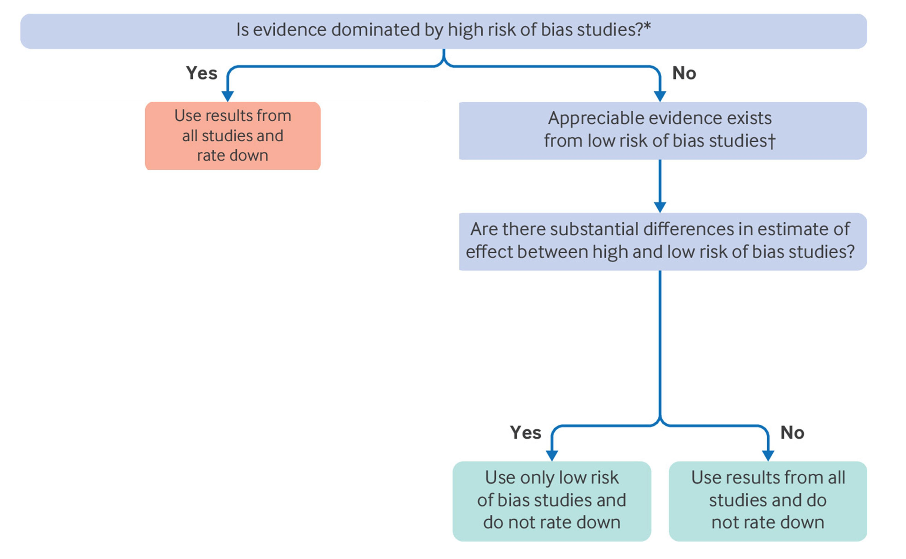
Firstly, systematic reviewers need to determine if high risk of bias studies dominate the body of evidence—that is, they carry substantially more weight than low risk of bias studies. If that is the case, GRADE users should pool results from all studies and rate down the certainty of evidence for risk of bias. We would conclude that high risk of bias studies dominate considering possible thresholds of weight in the meta-analysis of >65% or ≥55% of the weight.
If indeed high risk of bias studies dominate, before rating down for high risk of bias dominating the evidence, GRADE users may consider the direction of bias (When evidence dominated by high risk of bias studies consider direction of bias). This may obviate the need for rating down. However, we consider this complex consideration beyond Core GRADE.
Consider now the following examples of systematic reviews in which, for a particular outcome, high risk of bias studies dominated the evidence. A systematic review compared the addition of azithromycin to scaling and root planing versus not adding azithromycin in patients with chronic periodontitis. For bleeding on probing within three months, of the four relevant trials the only low risk of bias trial enrolled only 28 patients and reported a mean difference in proportion of sites that bled of 5.43. The 95% confidence interval (CI) was very wide (−8.96 to 19.82), including substantial benefit but also large harm: the study carried 15% of the weight in the analysis. The authors therefore included both the single low and the three high risk of bias trials that carried 85% of the weight and calculated a pooled estimate of −6.65 (95% CI −10.41 to −2.89), indicating benefit of azithromycin. Because of the dominant evidence from the high risk of bias studies and the corresponding sparse evidence from the single low risk of bias trial, after considering direction of bias the authors appropriately rated certainty down for risk of bias.
Another example comes from a systematic review comparing child feeding interventions with no intervention in children aged 5 years and younger. The meta-analysis of 15 trials with 1976 participants suggested increased vegetable consumption in the child feeding intervention group (standardised mean difference 0.44, 95% CI 0.24 to 0.65). Reviewers rated 10 trials with 1469 participants and 69% of the weight at high risk of bias. Thus, after considering direction of bias, the authors used the pooled estimate to make inferences and appropriately rated the certainty of evidence down for risk of bias.
In contrast, when appreciable evidence from low risk of bias studies exists, with reasonable thresholds for appreciable being ≥35 to ≥45% of the weight in the pooled analysis, GRADE users should consider, for each outcome of interest, whether low and high risk of bias studies suggest similar or substantially different magnitudes of effect. Criteria for “substantially different” might include differing clinical decisions on the basis of low or high risk of bias studies or, alternatively, point estimates on different sides of and far from the MID threshold. This inquiry should include formal tests of subgroup differences between trials, bearing in mind that such tests are often underpowered when there are only few trials.
If low and high risk of bias studies suggest substantially different intervention effects, GRADE users will base inferences on only the low risk of bias studies as their best estimate of effect and not rate the certainty down for risk of bias.
For example, a systematic review investigating the effect of corticosteroid treatment for patients admitted to hospital with community acquired pneumonia addressed the outcome of duration of stay in hospital. The investigators judged three trials with 1288 patients at low risk of bias and six trials with 359 patients at high risk of bias (low risk of bias studies carried 69% of the weight). The authors conducted subgroup analysis based on risk of bias and found very different estimates from low risk of bias trials (mean difference −1.00 day, 95% CI −1.79 to −0.21) and high risk of bias studies (mean difference −4.41 days, 95% CI −7.65 to −1.17); (P=0.045 for interaction). Thus, the authors appropriately based their inferences only on low risk of bias trials and did not rate down certainty for risk of bias.
If results are not importantly different in low and high risk of bias studies, Core GRADE users will include all studies in generating their best estimate of intervention effects and not rate the certainty down for risk of bias. The reason: risk of bias is just that—a risk that in a particular instance may or may not actually create bias. Investigators may fail to conceal randomisation, fail to blind, or lose large numbers of patients to follow-up and still generate minimally biased results. Thus, if low and high risk of bias studies suggest similar results, one can reasonably infer that the high risk of bias studies have provided minimally biased estimates, use results from all studies, and not rated down the certainty of evidence for risk of bias.
For example, a systematic review of randomised controlled trials compared the effect of human or bovine colostrum with placebo in preterm infants. For the outcome time to reach full feed, four studies with 131 participants proved at low risk of bias and two studies with 154 participants proved at high risk. Low and high risk of bias studies suggested similar results (low risk of bias studies carried 54% of weight: weighted mean difference −4.19 days, 95% CI −9.40 to 1.03; high risk of bias studies carried 46% of weight: −3.47 days, −9.06 to 2.13) (P=0.85 for interaction). Thus, reviewers appropriately used the results from all studies as the best effect estimate (−3.55 days, −6.77 to −0.33) and did not rate down certainty of evidence for risk of bias.
Conclusion
Fig 4-18 summarizes the Core GRADE approach to assessment of risk of bias. GRADE users will, in considering risk of bias, start by assessing individual studies as being at low or high risk of bias. When considering all studies together to decide whether to rate down certainty of evidence for risk of bias, GRADE users will first consider the relative contribution of high and low risk of bias studies. If high risk of bias studies dominate the evidence and bias may be responsible for the observed effect or lack of effect, GRADE users will rate down the certainty of evidence for risk of bias. If appreciable evidence exists from low risk of bias studies, GRADE users will determine whether low and high risk of bias studies suggest substantially different effects: if that proves the case, they will use only the results from low risk of bias studies and not rate down the certainty of evidence for risk of bias; if not, they will use the pooled results from all studies and again not rate down.
4.5 Publication Bias
What is publication bias
Publication bias refers to the bias in the pooled estimate of effect that results from failure to publish studies based on their results—typically studies with negative findings.47 Analyses of trials registered with institutional review boards have shown selective non-publication of studies with negative or statistically non-significant results.48 49 The effect has proved greater in NRSI than randomised trials.50 51
There are at least three causes of selective non-publication of studies with negative results. Firstly, authors may fail to submit studies for publication because of a perception that journals will consider negative results uninteresting. Secondly, journal editors and their peer reviewers may indeed find negative results uninteresting and reject manuscripts on that basis. Thirdly, for commercially funded studies, it is in the interest of funders motivated to maximise use of their product to suppress negative results and thus create an impression of larger than actual beneficial effects.
Avoiding publication bias: comprehensive search
Consideration of publication bias creates a unique problem for GRADE users: one is guessing at the presence of something that one cannot document. Systematic reviews with a less than comprehensive search may not locate studies published in non-indexed or non-English journals, or studies in registries (eg, clinicalTrials.gov) or regulatory databases (eg, FDA and European Medicines Agency), thus raising the possibility of conducting searches from these sources. For example, a systematic review of leukotriene receptor antagonists for chronic urticaria identified 24 out of 34 relevant randomised controlled trials in Chinese.57
Nevertheless, the likely low yield precludes the necessity of such searches in all or even most cases. Searches may, however, be desirable in some instances, such as in Chinese databases when conducting a systematic review of traditional Chinese medicine. Even a comprehensive search will not, however, detect studies with a delay to publication, that were never submitted, or that do not appear in any study registries
Addressing publication bias
Publication bias, when present, will typically result in an overestimation of effect. Thus, when pooled estimates suggest an important effect, reviewers should consider whether it is the result of publication bias. Fig 4-19 shows the steps Core GRADE users can follow to decide whether to rate down certainty of evidence for publication bias.
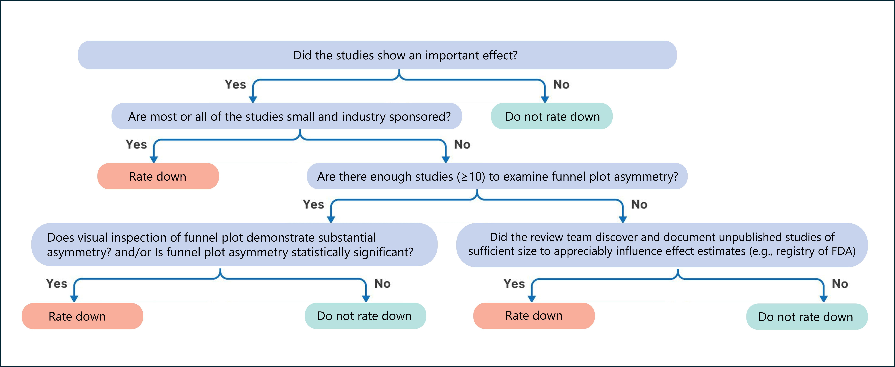
Commercial funding
In one example of selective publication by manufacturers, a systematic review examining the effect of reboxetine on acute treatment of major depression retrieved both published trials from databases and unpublished data from the manufacturer of reboxetine. Results showed that published data overestimated the benefit of reboxetine by as much as 115% compared with placebo and 23% compared with selective serotonin reuptake inhibitors.
In another example, a study investigated 74 antidepressant trials registered by the Food and Drug Administration (FDA) and found selective publication based on FDA deemed results from 38 studies as positive, of which 37 were published. Among the 36 trials with results deemed as negative or questionable, 22 were not published and 11 were published as positive.
Another study analysed 400 randomly selected trials registered on ClinicalTrials.gov for their public disclosure of results. Overall, 118 trials (29.5%) failed to make their results public within four years of completion. Commercially funded trials (adjusted hazard ratio 0.49, 95% CI 0.36 to 0.66) were less likely to be published or were published later.
In all these examples, authors had access to the results of unpublished studies, established they provided much less sanguine results, and thus had definitive evidence of publication bias. Reviewers may be aware that eligible studies exist, but results may be unavailable. If that is the case, and the sample size of those studies is large enough to impact substantially on overall results, reviewers should rate down for publication bias.
Reviewers may rate down for publication bias even when they have not identified specific unpublished studies. Because of the concern about the impact of industry sponsorship on selective publication, GRADE users should consider rating down for publication bias when the available studies are all small and industry sponsors have conducted most or all of the studies. For instance, a systematic review of flavonoids in patients with haemorrhoids that found large relative risk reductions in bleeding and pain identified 11 studies ranging in size from 40 to 234 participants all of which were industry sponsored.
Funnel plots and statistical tests
GRADE users can assess risk of publication bias by visually inspecting the funnel plot—a scatter plot in which each dot represents a study included in the meta-analysis. The horizontal axis shows the magnitude of effect estimate of the individual studies (eg, log odds ratio, mean difference) and the vertical axis shows precision of the estimate of effect (eg, inverse of standard error, sample size).59
In a funnel plot, larger studies with more precise results are displayed at the apex, and because they are more precise should be closer to the pooled estimate of effect. Smaller studies with lower precision scatter more widely at the bottom and should be symmetrically distributed around the pooled effect estimate. Thus, distribution of the dots should resemble a symmetrical inverted funnel (top panel in Fig 4-20).
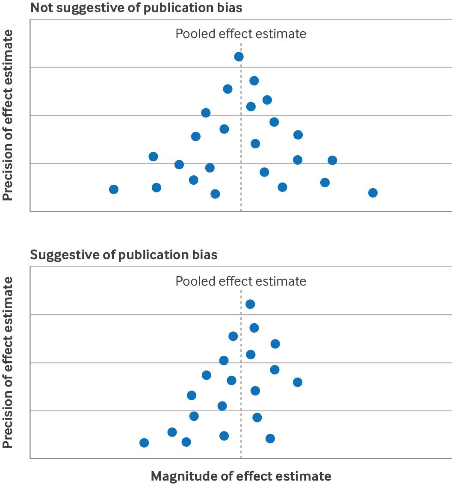
If the funnel plot is asymmetrical with a missing quadrant of small studies with negative results, publication bias represents a plausible explanation (bottom panel in Fig 4-19). However, other explanations include small studies being biased in favour of the intervention, or small studies more faithfully following the intervention and thus achieving more favourable results. Given these alternative explanations we sometimes refer to such asymmetrical funnel plots as showing small study effects.
Fig 4-21 presents an example of funnel plot asymmetry from a systematic review investigating the effects of probiotics on risk of acute infectious diarrhoea lasting ≥48 hours.60 Here, several small studies favour probiotics to a greater extent than the large studies but only one small study is less favourable than the large studies. Such a result warrants serious consideration of rating down for publication bias.
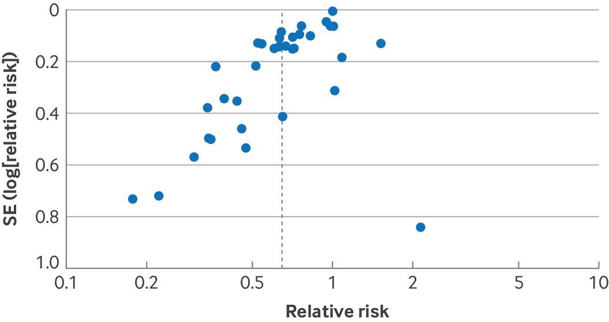
Using funnel plots to test publication bias does, however, have limitiations. Visual inspection of asymmetry involves subjectivity that is prone to error. Statistical approaches to test the asymmetry of funnel plots, including Egger's regression test and Begg's rank test, are available but have been criticised for both false negative rates and false positive rates. 6 The use of statistical tests requires a meta-analysis including ≥10 studies, also preferable for making inferences about funnel plot asymmetry.
Because of the limitations of the approaches for assessing publication bias, GRADE users will often be left with uncertainty. GRADE therefore suggests using the terms undetected (when no evidence suggests publication bias and they thus do not rate down certainty, the usual situation) and strongly suspected (when evidence suggesting publication bias exists and they do rate down certainty) to describe the publication bias domain.
Selective outcome reporting: Its relationship to publication bias and risk of bias
One type of selective outcome reporting occurs when the results for an outcome of interest in some studies are unfavourable and consequently the investigators do not report the results. In such instances, these studies do not contribute to the meta-analysis for that outcome. One can suspect selective outcome reporting when outcomes specified in the study protocol are not reported in the final publication, or one anticipates certain outcomes that authors omit in study publication while they report less critical ones. Since the funnel plot and test for funnel plot asymmetry can detect this problem, it is addressed in the publication bias domain.
Another type of selective outcome reporting occurs when studies report the results for the outcome of interest but the reported result is selected from multiple available effect estimates (eg, multiple time points, multiple outcome measurement methods, or multiple analytical approaches) or the the outcome measurement is inconsistent between the protocol and the publication report. Non-randomized studies of interventions, in which pre-registered protocols are far less likely to prespecify which of the possible results will be included in the analysis, require special attention since reporting bias may be enormous. This type of selective outcome reporting should be addressed as risk of bias in individual studies rather than publication bias.
4.6 Rating Up Certainty
Although NRSI start out as low certainty evidence, it is possible to rate up certainty derived from NRSI to moderate or even high certainty. We will now review the two situations when GRADE users might rate up certainty: large magnitude of effect and dose-response gradient.
Large magnitude of effect
As we have described, in the Core GRADE approach non-randomized studies of interventions (NRSI) start out as low certainty but may be rated down for risk of bias issues particular to NRSI designs. When NRSI are not rated down from low to very low (ie, no risk of bias limitations particular to NRSI designs, and sufficiently precise to exclude values less extreme than chosen thresholds), GRADE users will consider whether they show large effects. If they do observe large effects, GRADE users will consider rating up the certainty of evidence using the following thresholds: relative risk >2.0 or <0.5 (similar thresholds for odds ratio and hazard ratio), consider rating up one level; when relative risk is >5.0 or <0.2, consider rating up two levels.
The rationale for this guidance is that modelling studies have shown that the likelihood of confounders that could explain a relative risk >2.0 or <0.5 is low and the likelihood of confounders that could explain a relative risk >5.0 or <0.2 is very low.73 For example, a systematic review of observational studies examining the association between infant sleeping position and sudden infant death syndrome found an odds ratio of 4.46 (95% CI 2.98 to 6.68) of sudden infant death syndrome occurring with front versus back sleeping positions.74 Such an association would warrant rating up certainty by one level.
Other factors may strengthen the case for rating up. These include rapidity of onset (eg, insulin for diabetic ketoacidosis, and adrenaline (epinephrine) to treat anaphylaxis) and a relentless downhill trajectory without intervention (eg, hip replacement for severe hip osteoarthritis). Finally, there may be situations in which patients always or almost always did badly before and do so much better with a new intervention that no one has thought it worthwhile to conduct a formal observational study addressing the issue. Examples include resuscitation after cardiac arrest, insulin in diabetic ketoacidosis, adrenaline in anaphylactic shock, dialysis in terminal renal failure, and volume repletion in patients with evident volume depletion.
Dose-response gradient
The term dose-response gradient describes an observation that incremental increases (or decreases) of the dose or magnitude of the intervention produce incremental increases (or decreases) in the effect. For example, a meta-analysis of salvage radiotherapy after radical prostatectomy found that each 1 gray increase in the dose of radiotherapy is associated with a 2% increase in relapse-free survival. This dose-response gradient increases our certainty that a causal connection between the intervention and the outcome exists.
There are, however, risks in rating up for a dose-response gradient if the putative causal intervention is not actually causal but is linked to another intervention or situation that is causal.77 For example, several case-control studies showed a dose-response gradient between coffee consumption and pancreatic cancer[1]. As it turned out, the actual cause was not coffee but smoking, which does cause pancreatic cancer and for which a true dose-response gradient has been found (the more an individual smokes, the higher the likelihood of pancreatic cancer).
The apparent dose-response gradient for coffee was a result of an association between smoking and coffee consumption: smokers drank more coffee, and the more they smoked, the more coffee they drank. If GRADE users suspect such confounding between causal and non-causal associations, they will not rate up certainty for dose-response.
We also offer an alternative conceptualisation of the rating up process in which studies with large or very large effects and/or a credible dose-response gradient begin at moderate or high certainty evidence (Alternative approach to rating up certainty of evidence from non-randomized studies of interventions).
4.7 Rating Certainty of Evidence: Indirectness
Two types of indirectness - Indirect comparisons
GRADE guidance has used the term indirectness in two ways (Fig 4-22). In one, which we label indirect comparisons, the interest is in the relative merits of intervention A versus intervention B but evidence comes not from direct or head-to-head comparisons of A versus B. Rather, evidence comes from two sets of comparisons: A versus C and B versus C. In this indirect approach, if for instance A does far better against C than does B, we infer superiority of A over B.
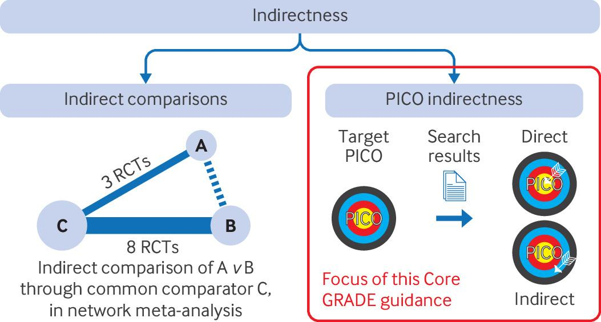
Over the past 15 years, indirect comparisons occur when two or more interventions are compared through a common comparator rather than through direct head-to-head trials. Network meta-analyses use both direct and indirect evidence to make comparisons between multiple interventions. GRADE focuses on direct comparisons of a single intervention with a single comparator. We will therefore not deal further with indirect comparisons but instead will focus on indirectness related to PICO issues.
Indirectness concerns in guidelines and health technology assessments versus in systematic reviews
When researchers conduct systematic reviews independently from health technology assessments or guidelines, they can establish eligibility criteria that closely fit their target PICO and restrict their eligibility criteria accordingly. As a result, indirectness is not often a major concern in such reviews.
HTA practitioners and guideline developers must, in contrast, address questions of current interest to patients and clinicians. They choose, or are presented with, questions of sometimes urgent relevance to these target audiences. They must therefore identify and summarise the current best evidence to address those questions, even if that evidence represents a poor or limited match to their target PICO.
Indirectness versus inconsistency
GRADE users must attend to the possibility that intervention effects between their target PICO and available evidence will differ, requiring rating down for indirectness. On the one hand, if they have no reason to believe that relative effects differ between men and women, different drug doses, or outcomes measured over one versus three years, they will be unconcerned about applying results to women when most evidence comes from men, a higher dose when evidence comes from a lower dose, or three year outcomes when evidence comes from follow-up at one year. When, on the other hand, they believe relative effects are likely to differ, they will have concerns about indirectness.
We have dealt with this central issue—whether effects differ across subgroups of patients and interventions— in our overview of Core GRADE and when we have addressed inconsistency. In addressing inconsistency, we noted that when systematic reviewers plan to use broad PICOs in their question definition (as should usually be the case), they must be prepared to face large differences in effects across studies. This preparation involves generating a priori hypotheses for possible explanations of inconsistency, and subsequently testing these hypotheses.
How do these issues of inconsistency and issues of indirectness differ? If we have evidence from both elderly people and younger people, low dose and high dose, or long follow-up and short follow-up, we can test whether effects differ across these variables. We label such situations as potential inconsistency and ultimately consider whether results suggest different effects between subgroups, and, if they do, evaluate the credibility of possible subgroup effects.
However, if GRADE users are interested in effects in elderly people but all or almost all evidence comes from younger people, in low dose but all or almost all evidence comes from high dose, or in long follow-up but all or almost all evidence comes from short follow-up, they lack the data to test whether effects differ across these variables. Under these circumstances, they must use the indirect evidence from the younger people, the high dose, and the short follow-up to make inferences about their target PICO. The extent to which relative effects will differ across such variables becomes a matter of mechanistic reasoning based on indirect evidence from basic research or other possibly analogous conditions, rather than on direct evidence from the patients and interventions under consideration. This method is thus less secure.
Indirectness encountered during search for direct evidence
A search for direct evidence sometimes yields evidence with some degree of indirectness involving one or more of the four PICO elements. Patients may be older or younger than the target population, have a different ethnic background, or have a different distribution of comorbidities.
Such differences typically do not warrant rating down for indirectness. The reason, as we have pointed out, is that true subgroup effects related to such characteristics are uncommon. Differences in baseline risk of adverse or desirable outcomes, including differences in comorbidity, seldom result in differences in relative effect.
Tthere are, however, particular situations in which serious indirectness exists in studies that prove eligible in a search for direct evidence. Such situations include non-adherence to interventions, studies that focus on surrogate rather than on patient important outcomes, and problematic comparators.
Indirectness encountered during deliberate search for indirect evidence
When direct evidence that matches their target PICO is unavailable or of very low or low certainty, GRADE users may fall back on evidence that substantially differs from their target PICO. When GRADE users deliberately search for indirect evidence, they will inevitably confront the possibility of rating down the certainty of evidence for indirectness.
Neglect of indirect evidence
Developers of clinical practice guidelines sometimes mistakenly conclude that no evidence exists for a PICO of interest. Very low quality evidence may, however, be available simply from clinical experience. Moreover, clinicians may often be considering an intervention because of evidence of its usefulness in related conditions—that is, indirect evidence. Consider, for instance, the repurposing of interventions at the onset of the covid-19 pandemic. The misguided enthusiasm for hydroxychloroquine13 and ivermectin14 highlights the limitations of such indirect evidence and thus the cautious inferences that it demands.
Nevetheless, indirect evidence may, even after reviewers have considered rating down for indirectness, offer low or even moderate certainty evidence. Even if indirect evidence proves very low certainty, it remains preferable to making conclusions or decisions based on no evidence. Nevertheless, guideline developers sometimes neglect to consider indirect evidence.
For example, a guideline panel may conclude there is no evidence for a potential intervention in children. They will often, however, be thinking exclusively of direct evidence. They may, as paediatricians would likely do in their clinical practice, be able to utilise indirect evidence from adults. In another example, early in the covid-19 pandemic, no direct evidence for several interventions existed, but indirect evidence from related conditions (eg, patients critically ill with acute respiratory distress syndrome but without covid-19) was available and provided support for guideline recommendations.
Guideline developers who are not clear on the concept may use indirect evidence without explicitly labelling what they are doing. A study that evaluated guideline recommendations labelled as expert opinion found that most of these recommendations were in fact based on indirect evidence.
Bearing in mind the possibility of indirect evidence, guideline developers and HTA practitioners, when formulating search strategies for questions in which they anticipate sparse direct evidence, should seriously consider systematically searching for indirect evidence that might inform their recommendations. Experts on the review team may be aware of the likelihood of finding relevant indirect evidence, and their advice may bear on the advisability of conducting the search.
Examples of indirectness: differences in population
Differences in age groups constitute a common indirectness issue in patients: elderly versus younger people, or children versus adults. For example, in a guideline that addressed the management of pancreatitis in children, authors found very limited evidence for antibiotic use in this age group. They therefore conducted a search for evidence from adults, ultimately using the indirect evidence as the basis for their recommendation. Although they did not conduct a formal certainty rating, authors described the evidence as limited, acknowledging decreased certainty associated with indirectness.
Changes over time Target patients may differ in many ways from patients enrolled in research studies. For example, the characteristics of presenting patients may evolve over time, as occurred during the covid-19 pandemic. Casirivimab and imdevimab given in combination and sotrovimab given alone are monoclonal antibodies that bind to the SARS-CoV-2 spike protein, thus neutralising the virus. Randomised controlled trials conducted in 2020 and 2021 showed that both casirivimab and imdevimab combined and sotrovimab alone reduced mortality in patients infected with the circulating virus at that time, motivating World Health Organization recommendations for use of these agents.
However, changes in the sequence of the virus spike protein that occurred when omicron or its subsequent sublineages became the dominant variants resulted in substantially diminished neutralisation activity in vitro.18 The population in the target PICO had now changed from those infected with the viruses circulating earlier to those infected with the variants subsequently circulating. The panel had no direct evidence—that is, no studies of the antibodies in the era of the new virus variants were available. Nevertheless, the laboratory evidence of diminished antibody neutralisation led the panel to conclude that the original randomised controlled trials now provided only very indirect evidence for the key outcomes, the antibodies were very unlikely to be effective in the new target population, and strong recommendations against use of the antibodies were warranted.
Similar challenges arise when, in searches for direct evidence, GRADE users must rely on results from older studies when diagnostic criteria and the availability of treatments differed. Relapsing and remitting multiple sclerosis provides an example of this phenomenon.
Differences in condition
On occasion, when direct evidence is unavailable or of low or very low certainty, systematic review authors can look to populations with some similarity but nevertheless considerable differences from the target population. For instance, a review team addressed the choice of mechanical or bioprosthetic valves in patients with dialysis dependent end stage kidney disease who required surgery for valvular heart disease. Patients receiving mechanical valves require long term anticoagulation whereas those receiving bioprosthetic valves do not. Observational studies comparing the two valve types provided only very low certainty evidence for one of the authors’ key outcomes—postoperative and non-gastrointestinal bleeding at latest follow-up.
Given the very low certainty evidence, the authors sought indirect evidence and conducted a systematic review and meta-analysis of five randomised controlled trials of warfarin versus placebo in other populations. They found an incidence rate ratio for bleeding of 2.99 (95% confidence interval (CI) 1.46 to 6.13) which, after rating down for indirectness of the population, they considered moderate certainty evidence of increased bleeding with the mechanical heart valves.
Indirect evidence for harms
In rare conditions, randomised controlled trials are typically small or very small. Estimates of intervention harms may therefore yield very wide CIs warranting rating down twice for imprecision.
The interventions in such situations may have been repurposed after use in much larger populations with other conditions. Although it would be unwise to assume similar benefits across these conditions and the new indication, one might expect the adverse effects associated with a drug to be similar irrespective of the illness for which it is administered. One might therefore rate down for indirectness only once—or not at all—for harms. Accordingly, if one had high certainty evidence for harms in other conditions, one would have moderate or high certainty for the population of immediate interest.
GRADE users have applied these principles. Examples include the use of steroids in other inflammatory conditions to its use in thrombotic thrombocytopenic purpura and chronic urticaria, and allergen immunotherapy in asthma and allergic rhinitis to its use in atopic dermatitis.
Systematic review authors have also applied the same principle to related conditions to improve the precision (ie, narrow CIs) of the estimates of harms across each of these conditions. For instance, a systematic review team pooled data from trials of corticosteroid use in sepsis, acute respiratory distress syndrome, and community acquired pneumonia to generate precise estimates of adverse effects.
Examples of indirectness: differences in interventions
Interventions studied may differ from the target PICO in several ways, including dose of a drug (higher or lower than the target intervention), duration of administration (shorter or longer), route of administration (parenteral versus oral), or the skill level of providers of interventions such as in educational, surgical, physiotherapy, and psychosocial interventions. Another concerning common source of indirectness for such interventions is that authors may not sufficiently describe the components of the interventions and this failure can preclude their replication. For instance, the details for cardiac rehabilitation were so poorly reported in the literature that surveys of rehabilitation programmes showed that what they implemented in practice differed substantially from what randomised controlled trials had shown to be effective. Inadequate description of the intervention constitutes a reason for rating down for indirectness.
Non-adherence
Another common way that trials of interventions differ from the target interventions is non-adherence of patients. Generally, patients and their healthcare providers are interested in the impact of an intervention when used as intended. High levels of non-adherence introduce problematic indirectness and thus compromise the certainty of the evidence. For example, a randomised controlled trial of nortriptyline as an adjunct to nicotine replacement for smoking cessation randomised 901 adults attending a smoking cessation service to nortriptyline or placebo.
They found that one year after quit day, 11% in the nortriptyline group versus 9% in the control group (relative risk 1.26, 95% CI 0.84 to 1.87) had stopped smoking. However, much earlier, four weeks after quit day, only 59% of patients in the treatment group and 56% of patients in the control group were taking the drugs. Had adherence been close to 100%, the impact of the intervention may have been greater, the estimate more precise, and the evidence would warrant higher certainty. The trial thus provides only indirect evidence of the effect of nortriptyline on smoking cessation in those who use the intervention.
In a systematic review that included additional trials that also had concerns about adherence, the CI was narrower (relative risk 1.29, 95% CI 0.97 to 1.72) suggesting that nortriptyline may increase smoking cessation (low certainty evidence due to indirectness and imprecision).
Indeed, the indirectness here is serious enough that, if the target PICO specified the effects of the intervention when people use it, the extent of non-adherence would surely warrant rating down for indirectness. Even though adherence was very limited, results suggested a possible signal in favour of nortriptyline. It is entirely plausible that had adherence been very high the results would have shown a benefit of nortriptyline in improving quit rates in smokers.
Note that if the intervention of the target PICO included how nortriptyline was actually used in the community, one might conclude that the low adherence study provided direct evidence. Such targets that include considerations at the population or public health level occur particularly often in health technology assessments.
In trials of screening interventions, when the target PICO may well focus on those who are adherent, indirectness due to those who are not adherent is often a major problem. Consider a randomised trial of colonoscopy screening for colorectal cancer versus no such screening, and a PICO of interest that specifies that patients all undergo the screening intervention. The question of interest to patients would be: “What will be the impact if I undergo screening?”—and contrasts with the question of interest to the policy maker: “What will be the effect of instituting a programme in which only some of the eligible population will be interested?”
A randomised controlled trial of colonoscopy allocated more than 84 000 participants in Norway (highest participation >60%), Poland (lowest participation 33%), and Sweden to receive or not receive an invitation for colorectal screening. In the intention-to-screen analysis, the intervention reduced the relative risk of developing colorectal cancer by 18% (95% CI 7% to 30%). The absolute risk reduction was about 2 in 1000 population over 10 years—a magnitude of effect some might consider not worth the burden of screening. The evidence is, however, indirect: the investigators would presumably have seen a larger effect if all those invited had participated.
Indeed, a per protocol analysis focusing on the Norwegian population estimated that, if adherent, patients would experience a 45% relative risk reduction. With this estimate, the effect is still small but appreciably greater, about 6 per 1000 population. The per protocol analysis provides a more direct estimate but with increased risk of bias. In general, the greater the differences between the anticipated effect in a fully adherent population compared with the effect observed in the partially adherent population studied, the more likely GRADE users will rate down for indirectness.
Finally, it is possible that randomised trials in which patients achieved high adherence may provide indirect evidence from a public health or funder’s point of view. Studies of behavioural interventions that most patients find extremely challenging to follow may enroll particularly committed patients and implement adherence enhancing strategies that are unfeasible or not widely applicable. They may thus achieve adherence that is unrealistically high for clinical practice. From a public health point of view, putting resources into such interventions for typical patients who cannot achieve high levels of adherence may be a poor decision. The high adherence situation thus represents, from the policy makers’ perspective, problematic indirect evidence.
Trials that allow switching treatments
Oncology trials may have protocols that allow switching treatments when a patient does not respond to the original intervention. For instance, consider the relative effects of two anticancer drugs, interferon-alfa and sunitinib, in adults with renal cancer. Systematic review authors encountered trials in which participants who experienced disease progression after treatment with interferon-alfa received sunitinib and other related treatments. How might this design bear on issues of indirectness?
The answer lies in considering the target PICO. GRADE users whose target PICO designates the comparison of sunitinib alone to interferon-alfa including the proviso that patients who do not respond to the drug are offered sunitinib will find results directly applicable. Systematic review authors interested in the impact of the two drugs without such switching will, in contrast, face limitations in the directness of the results. In the latter case in which users are interested in the independent effect of the drugs, the extent of indirectness will depend on the proportion of participants in the intervention arm who switched to the alternative intervention. If the proportion of patients who switched is large, the indirectness may be considerable and warrant rating down. If few patients switched, indirectness may be minimal andnot warrant rating down.
A second determinant of the necessity to rate down would be the apparent effect of the interventions. Considering the example comparison, if substantial switching to sunitinib occurs and the result for the arm that began with interferon-alfa proves similar to that of the sunitinib arm, the issue is in doubt: is the “rescue” sunitinib responsible for the similar results, or would the results have been achieved with interferon-alfa alone? On the other hand, if sunitinib proves superior, that superiority would only have been greater had no switching occurred. In the relevant systematic review, sunitinib and other related target treatments proved superior to interferon-alfa (relative survival 1.3, 95% CI 1.1 to 1.5). Thus, indirectness does not compromise the conclusion about sunitinib’s superiority to interferon-alfa, and authors have no need to rate down for indirectness.
Change of intervention technology
When the intervention is a device or technology, its evolution over time can result in important indirectness that lowers certainty. For example, devices that help people manage their diabetes are constantly changing. Continuous glucose monitoring systems were approved by the Food and Drug Administration in the late 1990s and have quickly evolved with new sensor technology such that wear time has lengthened from a few days to weeks and months. “Real-time” systems, systems managed with smart phones, and systems linked to insulin delivery pumps (closed loop systems) are now available. Guidelines on diabetes technology struggled with indirectness of older evidence and have continuously balanced two strategies: excluding studies of obsolete systems versus including studies of older systems and lowering certainty due to indirectness.
Examples of indirectness: differences in comparators
Situations in which the comparator differs from that in the target PICO include variations in standard care between jurisdictions, use of placebo when an active treatment is the clinically relevant active comparator, inferior older alternatives rather than current optimal alternatives, and differences in dose or route of administration.37 These problems may arise in searches for direct evidence when systematic review authors do not explicitly identify their comparator.
The problematic use of placebos rather than active comparators is common, particularly in drug development trials that have the ultimate goal of obtaining regulatory approval. For example, many randomised trials of disease modifying biologics for patients with rheumatoid arthritis did not use active comparators, including trials enrolling patients with a high level of active disease, thus withholding potentially helpful treatments. While meeting regulatory requirements, such designs, by choosing suboptimal comparators, raise issues of indirectness.
The use of suboptimal comparators in industry sponsored trials is common, and include the following examples. Large industry sponsored trials evaluating newer antihypertensive drugs chose the beta blocker atenolol as the comparator, despite previous evidence showing inferiority of beta blockers to a low dose thiazide diuretic. Manufacturers of newer antipsychotic agents overestimated the advantages of reduced toxicity of their drugs by comparing them to inappropriately large doses of older alternatives. Eight such trials used fixed doses of haloperidol 20 mg/ day, substantially above recommended doses. Several studies used interferon beta-1a given intramuscularly as the comparator versus new drugs for multiple sclerosis after investigators had established the superiority of subcutaneous interferon alfa-2b.
A more recent example comes from randomised controlled trials in patients with multiple myeloma conducted in the US in which enrolment occurred between 2010 and 2020.47 The authors considered a control group regimen inferior if, before patient enrolment began, a previous randomised controlled trial had shown an improved progression-free survival versus the control group. Of 49 identified randomised controlled trials, seven (14%) began enrolling patients into inferior control groups after a study of an existing superior regimen had been published. The primary funding source in all seven was the pharmaceutical industry. These trials provide only indirect evidence for what might happen had trial investigators chosen the best available comparator. In 2000, a similar analysis of multiple myeloma trials illustrated the persistence of problems related to the selection of an inferior comparator.
Chinese investigators studying randomised trials of anticancer drugs authorised by Chinese institutional review boards between 2016 and 2021 reported a similar problem. They found that 60 (13.2%) of 453 phase 2/3 and phase 3 randomised controlled trials included a suboptimal control arm.49 In all these situations GRADE users would rate down the certainty of evidence for indirectness against the appropriate optimal comparator.
Investigators may sometimes have no choice but to use placebo comparisons to obtain indirect estimates of effects of alternative active agents. For instance, systematic review authors informing a clinical practice guideline were interested in interventions for the management of patients with X linked hypophosphataemia.50 In particular, they wanted to evaluate the impact of burosumab on pain and function, both against no specific treatment and against conventional treatment of phosphate salts and active vitamin D. The authors identified a randomised controlled trial of burosumab versus placebo that provided moderate to high certainty evidence for some of the key outcomes, but no study comparing the drug with standard of care. They offered evidence from the trial against placebo as the best estimates representing the maximum differences against standard of care, rating down once for indirectness for each outcome. Although not a satisfactory situation, the authors approach is the best possible under the circumstances.
Differences in outcomes
The impact of intervention versus comparators on outcomes may differ as a result of how the outcomes are measured (eg, symptomatic versus asymptomatic vertebral fracture or symptomatic versus asymptomatic deep vein thrombosis), or the duration of follow-up (short term versus long term). Outcomes may also differ by how they are measured: directly (death rates) or indirectly through surrogate measures (reduction in viral load in HIV). Such issues will arise when GRADE users include studies that measure only surrogates and not patient important outcomes.
How should GRADE users handle the situation when the available outcome is a surrogate or substitute for what patients consider important? GRADE users will specify the patient important outcome for which the surrogate is substituting and consider the degree of indirectness, inferring the impact on the patient important outcome from the surrogate and rating down certainty of evidence as appropriate. The following example provides an application of the approach.
Consider patients with mitral valve stenosis faced with the choice of percutaneous versus surgical mitral commissurotomy. A key outcome for such patients is progression of heart failure symptoms as a result of the procedure failing over the long term. Because patients with larger valve areas generally have fewer symptoms, studies comparing these procedures report the mitral valve area as a measure of success. A systematic review of randomised trials comparing the two procedures addressed their relative merits for minimising development or progression of heart failure symptoms.
The review found that no eligible studies measured patient symptoms over the long term. What investigators conducting these studies did measure was a surrogate for symptoms—mitral valve area at 30 months by echocardiography or cardiac catheterisation. The systematic review authors specified their outcome of interest as patient symptoms over the long term as inferred from the surrogate. Ultimately, they rated down the certainty of evidence for imprecision and inconsistency as well as for indirectness of the outcome, resulting in very low certainty evidence as shown in an adaptation of their summary of finding table (Table 4-3).
| Outcome | No of trials/No of patients | Result | Certainty of evidence |
|---|---|---|---|
| Heart failure symptoms as inferred from mitral valve area | Six randomised controlled trials, 458 patients | Little or no difference in symptoms of heart failure inferred from difference in mitral valve area of 0.13 cm² higher (95% CI 0.09 lower to 0.35 higher) in patients undergoing commissurotomy | Very low due to serious indirectness, serious imprecision, and serious inconsistency |
Although one might consider rating down more than one level for indirectness for any PICO element, this possibility is typically more salient for surrogate outcomes. For instance, in patients with end stage kidney disease, disturbances in calcium and phosphate metabolism may result in fragility fractures and myocardial infarction. Initial evidence of new therapeutic interventions focused on measures of calcium/phosphate metabolism, a very indirect measure of fractures and myocardial infarction, thus warranting rating down two levels for indirectness.
Bone density for fractures and coronary calcification for myocardial infarction represent surrogates that may be better predictors of the impact of treatment on patient important adverse outcomes and thus may warrant rating down for indirectness by only one level Thus, the decision to rate down one or two levels depends on one’s understanding of the likelihood that change in the patient important outcome will follow change in the surrogate. GRADE users addressing the possible impact that treatment effects on surrogate outcomes might have on patient important outcomes might consider exercises in which they make specific quantitative assumptions and model likely results.52 Because we see the likely gain in rigour and in soundness of conclusions as marginal, we do not see this as part of Core GRADE. Table 4-4 summarises issues in rating down for indirectness, referring back to the examples we have used and presenting the likelihood of rating down.
| PICO element | Reason for rating down | Examples | Likelihood of rating down |
|---|---|---|---|
| Population | Population differences may interact with magnitude of effect | Adult versus paediatric Changes in virus antigens Comorbidity (diabetes, renal disease) |
Low likelihood because relative effects are typically similar across populations |
| Intervention | Interventions often differ in dose, duration, or subclass | Drugs within a class Dose of drug Non-adherence Switching versus non-switching of treatments within a treatment strategy Advances in technology |
Intermediate likelihood depending on underlying biology and on magnitude of issues such as non-adherence and frequency of switching |
| Comparison | Different comparators may have different effects on target outcomes | Use of placebos versus unblinded standard treatment or alternative intervention Inferior older alternatives in trials of new drug Suboptimal doses of comparators |
Substantial likelihood in trials of new agents when an effective treatment already exists, particularly more than one effective treatment |
| Outcome | Impact on surrogates often fails to translate into improvement in patient important outcomes | Cardiac function versus mortality in heart failure Bone density versus fractures in osteoporosis Test performance versus function in dementia Blood glucose versus microvascular and macrovascular morbidity and mortality in diabetes |
High likelihood because of frequent disappointing results in randomised controlled trials examining patient important outcomes |
Conclusion
Limitations in the extent to which the PICO in the available studies differs from the target PICO—in GRADE called indirectness—represent a common reason for rating down certainty of evidence in the development of guidelines and health technology assessments. When direct evidence is unavailable or of low or very low certainty, GRADE users should consider searching for indirect evidence that may result in higher certainty evidence. Whenever the PICO elements in the relevant studies do not completely correspond with GRADE users’ target PICO, they must consider the likelihood that these differences will result in important variation in intervention effects, and if that is likely they should rate down by one level for indirectness or—particularly with surrogate outcomes—by two levels.
4.8 Presenting the evidence in summary of findings tables
Summary of findings tables represent a key GRADE innovation providing an optimal structure to present benefits and harms that clinicians, patients, and decision makers require to guide their choices. Summary of findings tables systematically present numerical results, including the relative and absolute effects, that show the impact of alternative interventions on prioritised patient important outcomes, and the associated certainty of evidence. In this section, we first describe the components of summary of findings tables and then present considerations for calculating relative and absolute effects for binary outcomes and issues related to presentation of continuous outcomes. We then address problems related to choice of outcomes, what to do when one is unable to pool data through meta-analysis, questions informed by more than one source of evidence, and use of online software for the production and dissemination of summary of findings tables.
This material will enable GRADE users to understand the key components in summary of finding tables, including relative and absolute effects, the certainty of evidence, plain language summaries, and reasons for rating certainty of evidence up or rating down; calculate absolute effects for binary outcomes by applying relative risk estimates to baseline risk; choose the most appropriate presentation format for pooled effect measures when individual studies use different instruments to measure the same continuous outcome; and understand considerations in using software for creating summary of findings tables.
Components of summary of findings tables
For each outcome of interest, summary of findings tables summarise the evidence addressing the effects of interventions versus comparators and the certainty of that evidence, as well as reasons for rating down or up (Table 4-5). Each row in the table focuses on a single outcome presented in the first column. Subsequent columns present the number of participants, number and type of studies, relative and absolute effects presented as risk differences, certainty of evidence, and a plain language summary describing the effect. Although the format for presenting summary of findings tables may differ, the key information they present should not. A format we refer to as an evidence profile represents an alternative (Alternative format for summarizing Evidence profile).
| Outcome and follow-up | No of participants (No of studies and type) | Relative effect (95% CI) | Absolute effects (95% CI) | Certainty of evidence | Plain language summary |
|---|---|---|---|---|---|
| Mortality (Risk of death) Follow-up: longest, range 7.7-60 months |
1821 (11 non-randomised studies) | Hazard ratio 0.78 (0.69 to 0.89) | One year risk of dying 578 per 1000* → 490 per 1000 88 fewer per 1000 (129 fewer to 42 fewer) |
Low† Due to non-randomised studies |
Intensive antileukaemic treatment may decrease mortality |
| Mortality (Proportion of people who died) Follow-up: one year |
87 (one randomised controlled trial) | Risk ratio 0.83 (0.61 to 1.13) | 558 per 1000 → 463 per 1000 95 fewer per 1000 (218 fewer to 73 more) |
Low Due to very serious imprecision‡ |
Intensive antileukaemic treatment may decrease mortality |
| Complete remission duration in months (or time to relapse) Follow-up: longest, range 13.3-60 months |
593 (four non-randomised studies) | Four studies reported this outcome. Three of the four reported a shorter remission with intensive treatment. The difference in duration ranged from 3.1 months shorter to 0.03 months longer. | - | Very low Due to serious imprecision†§ |
We are very uncertain about the effect of intensive antileukaemic treatment on complete remission |
| Serious adverse events (Proportion of people who had treatment emergent adverse events) Follow-up: longest, median 5 years |
190 (one non-randomised study) | Risk ratio 1.34 (1.03 to 1.75) | 463 per 1000 → 621 per 1000 157 more per 1000 (14 more to 347 more) |
Very low Due to serious risk of bias and imprecision†¶** |
We are very uncertain about the effect of intensive antileukaemic treatment on serious adverse events |
| Duration of hospital stay Follow-up: longest, range 20-60 months |
370 (three non-randomised studies) | - | 24.36 days → 37.32 days 12.96 more days (16.23 fewer to 42.15 more) |
Very low Due to very serious inconsistency and very serious imprecision††‡‡ |
We are very uncertain about the effect of intensive antileukaemic treatment on duration of hospital stay |
| Quality of life impairment—not reported | - | - | - | - | - |
CI=confidence interval; MID=minimal important difference.
* Event rate from one year mortality was used for less intensive treatment (from non-randomised studies).
† Body of evidence is from non-randomised studies—assessment of certainty of evidence started at low.
‡ Using an MID of 50 per 1000, the 95% CI suggests the possibility of an important benefit and an important harm, thus rating down two levels for imprecision.
§ Meta-analysis was not possible, but it is likely that the pooled estimate would have crossed the null.
¶ The study was at serious risk of bias due to confounding and at moderate risk of bias due to deviation from intended interventions, thus rating down two levels for risk of bias.
** Using an MID of 10%, the 95% CI suggests the possibility of trivial and important harm.
†† Not all CIs of the studies overlap, and the statistical heterogeneity is high (I2=99%).
‡‡ Using an MID of five days, the 95% CI suggests important benefit and important harm.
Assessing the certainty of evidence involves choices and judgment. Those making the judgments must communicate their rationale in succinct, explicit, and transparent footnotes (ie, explanations) with the summary of findings table. This is one of the strengths of GRADE: although two GRADE users may arrive at different judgments when looking at the same body of evidence, providing sufficient information for readers to understand their rationale will clarify the reasons for disagreement.
For instance, they may have chosen different thresholds for the minimal important difference (MID), the smallest magnitude of effect that patients consider important. Understanding these reasons may allow, in different contexts, adaptation of existing summary of findings tables to different choices or judgments. Explanations should be concise, informative, relevant, easy to understand, and accurate. (Writing footnotes to explain certainty of evidence judgments) A previous GRADE paper provided guidance for wording plain language summaries communicating the effects while conveying the assigned level of certainty of the evidence, thus facilitating understanding of evidence summaries. Box 1 summarises this guidance as well as additional guidance related to the null and MID thresholds that are the focus of Core GRADE.
Box 1: Writing standardised GRADE plain language summaries in summary of findings tables
Standardised plain language summaries should convey, for each outcome, information about the certainty of the evidence and the effect of the intervention. The following qualifiers then inform the direction of the effect:
- High certainty: reduces, increases, or has little to no effect
- Moderate certainty: probably (likely) reduces, increases, or has little to no effect
- Low certainty: may (possibly) reduce, increase, or have little to no effect
- Very low certainty: the evidence is very uncertain; or the effect is very uncertain
When focusing on the target of certainty in relation to the null, plain language summaries should communicate that there is a benefit or harm, which is to be understood as a non-null effect. Examples:
- High certainty: knee arthroscopy increases function
- Moderate certainty: knee arthroscopy probably (likely) increases function
- Low certainty: knee arthroscopy may (possibly) increase function
- Very low certainty: the effect of knee arthroscopy on function is very uncertain
When focusing on the minimal important difference, plain language summaries should communicate that there is an important benefit or harm, or alternatively that there is little to no important effect. Examples:
- High certainty of an important effect: knee arthroscopy results in an important increase in function
- Moderate certainty of little to no effect: knee arthroscopy probably has little to no important effect on function
- Low certainty of an important effect: knee arthroscopy may (possibly) result in an important increase in function
- Very low certainty: the effect of knee arthroscopy on function is very uncertain
GRADE=Grading of Recommendations Assessment, Development and Evaluation.
Presenting dichotomous outcomes: Relative measures of effect
We have emphasised in both the first and the second article in this series dealing with establishing the target of certainty rating and rating down for imprecision1 2 that relative risks are usually similar across different baseline risks. Thus, systematic review authors will usually conduct meta-analyses of relative effects, using either relative risks, odds ratios, or hazard ratios. Relative risks are easier to interpret than odds ratios and facilitate estimation of absolute effects, making it the preferred measure from a user’s perspective. The odds ratio, however, can address problems that occur with relative risks when baseline risks are high (>50%). Such situations are unusual and relative risks usually serve well.
One can interpret hazard ratios, which consider not only if an event occurs but when it occurs, similarly to relative risks. Investigators often use hazard ratios when mortality is the outcome of interest and death rates are high, as in the specialty of oncology (Table 4-5, first and second row). Under these circumstances, duration of survival becomes the most important factor for patients.
Because patients and key stakeholders are primarily concerned about absolute rather than relative effects, summary of findings tables include absolute measures—risk differences—for key binary outcomes.To generate risk differences, they apply relative estimates that come from the meta-analyses to baseline risks. In making their decisions, they consider the magnitude and associated certainty of those absolute effects. The next section presents the method of calculating and how to present absolute effects.
Calculating and presenting absolute measures of effect: Applying relative effects to baseline risks
Because they depend on baseline risks, absolute effects vary from one clinical scenario to another. Therefore, the first step for GRADE users when calculating absolute effects is to select a specific baseline risk for the patient group under consideration. In doing so they should decide on a time frame for measuring outcomes and in general use that same time frame for all outcomes.
Use of the same time frame for all outcomes is not an absolute rule. For example, it is not unusual for benefits to occur over a short time frame but for rare serious events to occur only over the long term. A summary of findings table needs to report both outcomes using the appropriate time frame.
Because of the often selective sampling process in many randomised trials, the baseline risk will ideally come from a rigorous, large observational study that includes a more generalisable population, a systematic review of such studies, or a large pragmatic trial with broad eligibility criteria. Such studies are often unavailable and as a result systematic review authors will often use the median event rate in the comparator arms across all randomised trials included in the review.
To obtain risk differences, authors apply pooled relative effects to chosen baseline risks. To illustrate with an example, consider the outcome mortality as calculated from randomised controlled trials—row 2 in Table 4-5. The body of evidence (in this case from a single randomised trial) suggests that, when comparing intensive versus less intensive antileukaemic treatment, the relative risk is 0.83 (a 17% relative risk reduction). Applying this relative risk reduction to the baseline risk of death among older adults who receive less intensive antileukaemic treatment (56%), the absolute risk reduction with intensive antileukaemic treatment is calculated as 17% multiplied by 56%, equaling a 9.5% absolute risk reduction. (Calcuating absolute effects based on baseline risks an relative effects)
Different risk groups
Clinicians can sometimes, considering prognostic factors for outcomes of interest, identify patients with sufficiently different baseline risks to warrant different management strategies. When this is the case, GRADE users may present separate risk differences for patient groups at varying risk of events, which can lead to different decisions.
Table 4-6 presents an example from a systematic review supporting the development of recommendations regarding the use of sodium-glucose cotransporter-2 (SGLT-2) inhibitors versus standard care for people with type 2 diabetes.19 20 The guideline authors, aware of the large gradients in risk of death in people with type 2 diabetes depending on their risk factors and cardiovascular and renal morbidities, made recommendations taking into account these baseline risks. The guideline panel identified five risk strata and ultimately made recommendations specific to each stratum. Here, we highlight results for the most important outcome, all cause mortality, from the two extremes: people at lowest risk and those at highest risk.
| Outcome | Time frame: five years | Study results and measurements | Standard care | SGLT-2 inhibitors | Certainty of evidence | Plain language summary |
|---|---|---|---|---|---|---|
| All cause mortality (very low risk: adults with ≤3 risk factors and no underlying cardiovascular disease or chronic kidney disease) | - | Odds ratio 0.77 (95% CI 0.71 to 0.83) Based on data from 282,704 participants in 225 studies |
20 per 1000 | 15 per 1000 5 fewer per 1000 (95% CI 6 fewer to 3 fewer) |
High | There is no important difference between SGLT-2 inhibitors and standard care |
| All cause mortality (very high risk: patients with cardiovascular disease and chronic kidney disease) | - | Odds ratio 0.77 (95% CI 0.71 to 0.83) Based on data from 282,704 participants in 225 studies |
265 per 1000 | 217 per 1000 48 fewer per 1000 (95% CI 61 fewer to 35 fewer) |
High | SGLT-2 inhibitors reduce the risk of death compared with standard care |
CI=confidence interval; SGLT-2=sodium-glucose cotransporter-2.
The authors began by conducting a meta-analysis to calculate the relative effects of SGLT-2 inhibitors on mortality across the entire population and reported an odds ratio of 0.77 with a 95% confidence interval (CI) from 0.71 to 0.83 (Table 4-6). The authors explored possible subgroup differences in relative effects across risk groups. They found no evidence of effect modification, including at the extremes of baseline risk. They therefore applied the relative risk to the baseline risks in the two risk groups over a period of five years (20 per 1000 deaths in people at very low risk; 265 per 1000 in the highest risk group).
The result was a risk difference of 5 fewer per 1000 with SGLT-2 inhibitors in the lowest risk group and 48 fewer per 1000 in the highest risk group. The synthesis team presented the evidence for all five subgroups in the summary of findings in adjacent rows—Table 4-6 does so for the highest and lowest risk groups. Considering not only mortality but other relevant outcomes, the panel made a weak recommendation against treatment in the very low risk group and a strong recommendation in favour in the very high risk group.
In other situations, particularly when displaying multiple important outcomes, it may be appropriate to develop separate summary of findings tables for each risk group. Using different risk groups may lead to different targets of certainty rating, as it did here (target little or no effect in the low risk group and an important effect in the high risk group). This may then result in different decisions about precision and inconsistency.
Here, using an MID in mortality of 10 in 1000, the entire CI for the low risk group fell in the range of no important effect and in the high risk group fell entirely in the range of an important effect, in both cases indicating no serious imprecision.
Directly calculating risk differences
Calculating risk differences by applying relative effects to baseline risks may, in some scenarios, result in misleading point estimates of effect and even more misleading and asymmetrical CIs. Such results often occur when the outcome is rare (event rates <2% and most problematic <1%). Faced with this problem, rather than conducting meta-analysis of relative effects, review authors should generally conduct meta-analyses of risk differences. (Calculating and presenting absolute measures of effect: Directly calculating risk differences)
Presenting continuous outcomes: When studies use the same measure
In many cases, studies reporting an outcome measured as a continuous variable use the same instrument or scale across studies. Take, for instance, length of hospital stay (measured in days) in Table 4-5 or pain (often measured using a 10 cm visual analogue scale) in Table 4-7.
| Outcome | Time frame | Studies and measurements | Conservative management | Arthroscopy | Certainty of evidence | Plain language summary |
|---|---|---|---|---|---|---|
| Option 1 Pain (difference in change from baseline) |
Three months | Measured by different instruments converted to scale of index instrument (KOOS pain subscale—MID 12) Scale 0-100, higher scores better Based on data from 1231 participants in 10 studies |
Mean 15.00 points | Mean 20.00 points Mean difference 5.38 more (95% CI 1.95 more to 8.81 more) |
Moderate*† Different pain summary measures suggest different effects |
Knee arthroscopy probably does not result in an important reduction in pain |
| Option 2 Pain (difference in proportion of patients who achieve a change greater than the MID) |
Three months | Based on data from 1102 participants in nine studies Follow-up three months‡ |
669 per 1000§ | 793 per 1000 Difference 124 more per 1000 (95% CI 44 more to 204 more) |
Low†¶ Serious imprecision and different pain summary measures suggest different effects |
Knee arthroscopy possibly increases the number of patients with an important reduction in pain |
| Option 3 Pain (SMD in change from baseline) |
Three months | Measured by different instruments with different scales Scale: Higher scores better Based on data from 1231 participants in 10 studies |
Mean 15.00 | Mean 17.04 SMD 0.16 higher (95% CI 0.03 higher to 0.28 higher) |
Low†** Serious imprecision and different pain summary measures show different effects |
Knee arthroscopy possibly does not result in an important reduction in pain |
CI=confidence interval; KOOS=Knee injury and Osteoarthritis Outcome Score; MID=minimal important difference; SMD=standardised mean difference.
* Although the I2 statistic was high, all point estimates suggested little to no effect and therefore no rating down for inconsistency.
† Some pain summaries suggest small but important differences in pain, whereas others suggest only unimportant differences, warranting rating down for inconsistency.
‡ Because one study provided data allowing calculation of the portion of patients who achieved a change greater than the MID, 10 studies were relevant for options 1 and 3 and nine for option 2.
§ Baseline risk of 669 per 1000 based on the median of number of people who achieved an improvement of MID or greater in the conservative management groups.
¶ Using an MID of 100 per 1000 patients (10%), the 95% CI crosses this threshold, suggesting the possibility of a trivial benefit and thus warranting rating down for inconsistency.
** Using Cohen's threshold for interpretation of SMD, the 95% CI crosses the MID (small effect threshold) of 0.2, suggesting the possibility of an important benefit and thus warrants rating down for imprecision.
When studies use the same measure, an intuitive measure of effect is the mean difference. Because natural units (that is, the units of the outcome measure, for instance hospital days, or, in Table 4-7, option 1, the units of the KOOS (Knee injury and Osteoarthritis Outcome Score) pain scale rather than statistical units such as the standardised mean difference) are used, GRADE users present the mean difference in the absolute effects column. To facilitate interpretation, the preferred approach is to provide information about the outcome in the comparison group (for example, in Table 4-5 the median duration of hospital stay in the control arm was 24 days), the intervention group (37 days in Table 4-5), and the difference between the two (13 days).
In addition to describing the time point of interest and method of measurement of the outcomes (eg, visual analogue scale, KOOS pain scale, days in hospital), the summary of findings table should provide, when it is not obvious, the range and direction of the scale or the units in which the results are presented. For example, blood loss may be presented in millilitres or ounces, and visual analogue scales for measuring pain are used with ranges of 0-10 cm or 0-100 mL—the interpretation of the same mean difference of 2 points will be very different if a 10 point scale versus a 100 point scale is used. Similarly, some patient reported outcomes might be measured with instruments in which higher scores signify better outcomes, and others in which lower scores signify better outcomes (we present an example in the next section). GRADE users should therefore communicate the direction of the instrument’s scale.
Finally, perhaps the most useful way of ensuring the interpretability of the outcome is to designate the smallest difference patients perceive as important, the MID. For instance, a footnote in Table 4-5 specifies the MID for reduction in hospital stay of five days and the first row in Table 4-7 specifies the MID for the KOOS pain scale of 12.
When studies use different measures
Researchers sometimes measure the same outcome using different instruments. This most often occurs in health status measures that address constructs such as health related quality of life, function, or severity of symptoms. Multiple instruments are often available, and investigators make different choices for their studies. When this occurs, it presents challenges for systematic review authors.
Table 4-7 presents an example from a systematic review assessing the effect of knee arthroscopy versus conservative management in people with degenerative knee disease2 developed to support a guideline. Across the included randomised trials, researchers used seven different instruments to measure the outcome of function related to knee arthritis. When preparing their summary of findings table, GRADE users have several options for summary effect measures, three of which are illustrated in Table 4-7. A previous GRADE paper provides additional details of the alternatives, and another previous paper details the statistical methods involved.
Option 1: Using the mean difference on the scale of an index instrument When one of the instruments is more commonly used and understandable than others (the index instrument), Core GRADE users can convert the other scores into the scale of the index instrument. They then conduct the meta-analysis using the mean difference on the index instrument as the measure of effect. In the example, clinical experts suggested KOOS, which uses a scale of 0-100 (with higher scores representing better function), as the index instrument.
When studies reported function using the Western Ontario and McMaster Universities’ arthritis index domain (range from 0 to 68, with higher scores representing worse function) transforming to a scale of 0-100 and reversing the direction allowed combining results across studies using the mean difference (Table 4-7, first row). When choosing this option, systematic reviewers are likely to require different conversions for each instrument (for example, scores from the Arthritis Impact Measurement Scale, with a range 0-10, multiplied by 10) or may need no conversion at all if another instrument uses the same range (for example, SF-36 survey scores also have a scale from 0 to 100 in the same direction as KOOS).
Authors can then make the results on the index instrument interpretable by relating it to the MID. In this case, the best estimate of the KOOS MID is 12 units.34 Because the mean difference (5.38) is much less than the MID, one can conclude that any improvement as a result of the intervention is small and likely unimportant.
Option 2: Presenting data as binary outcomes If systematic reviewers or guideline developers know what the MID is for each of the instruments and assume a normal distribution of results, they can calculate the proportion of people who experience an improvement larger than the MID within each arm, thereby obtaining a risk ratio or risk difference for each of the studies. They can then pool these proportions across studies. Alternatively, if an MID for each instrument is not available, reviewers can convert scores into the scale of the index instrument with a known MID. Based on the results of a systematic review of the literature addressing MIDs across instruments, the second row of Table 4-7 shows the results of such an analysis. A previous paper describes the underlying statistical methods.
Option 3: Calculating the standardised mean difference When included studies assess the same outcome but measure it using a variety of different scales review authors sometimes choose another option, the standardised mean difference (SMD) as a summary statistic. By dividing the mean difference between the treatment and control groups by the pooled sample standard deviation in each study at a specific time point, the SMD converts the results of all studies to standard deviation units.
The SMD is prone to major problems. Firstly, SMDs express the size of the treatment effect in each study relative to the variability observed in that study. Many may find the resulting treatment effect reported in standard deviation units rather than the original units of measurement difficult to interpret. Secondly, although guidance is available to interpret SMDs (ie, an SMD of 0.2 is the threshold for a small and important effect),40 clinicians may be appropriately sceptical of this threshold, which is limited by large variability in the methods investigators use to calculate the SMD. Lastly, the SMD bears a highly variable relation to the actual magnitude of effect: in two studies with exactly the same magnitude of effect, the SMD will be much larger in a study that enrolls a homogeneous population than in one that enrolls a heterogeneous population.
All these options have limitations. Although the SMD (option 3) remains the most used summary statistic, for the reasons we have noted, it is often the least satisfactory. Review authors should consider using the SMD only when the outcome is reported using multiple scales and no instrument measuring the construct has a credible MID available. For many clinicians, using natural units in relation to their MIDs (option 1) remains an unfamiliar approach, and in interpreting results they must avoid the temptation of inferring that any effect smaller than the MID is unimportant. Converting the continuous to a binary outcome (option 2) is appealing in that this clinicians are familiar with this presentation. Other options remain available, including the ratio of means, a presentation that some find intuitive and appealing.
We suggest presenting the mean difference and interpreting these differences in relation to the MID (option 1), as well as the binary outcome approach (option 2). If results are concordant between these approaches, review authors may make strong inferences about the apparent magnitude of effect. If not, inferences about magnitude must be weaker. Indeed, in Table 4-7 the methods that present a continuous variable (options 1 and 3) suggest a small and likely unimportant effect, whereas the binary approach (option 2) provides a point estimate of 12.4% more individuals who gain an important improvement, an effect that most patients are likely to consider important.
GRADE users will acknowledge such discrepancies between interpretations of results and rate down certainty of evidence accordingly. They must still, however, take responsibility for a coherent message for clinicians and patients who rely on them for guidance. Given the evidence in Table 4-7, conclusions of little or no effect or a small but important effect are both reasonable. Guideline panels will need to come down on one side or the other and present results in their summary of findings tables that support their inference. The text discussion should, however, present alternative results in explaining the lower certainty of evidence supporting their ultimate inferences.
Additional considerations for summary of findings tables: Choosing which outcomes to present
Previous GRADE guidance suggested limiting the number of outcomes to seven, but this may not adequately serve the needs of the target audiences of a particular systematic review. For instance, target audiences may be interested in the effect of an intervention at different time points; they may wish to see different ways of presenting the outcome, such as in the example in Table 4-7, including both as a dichotomous and as a continuous outcome; they may wish to see evidence for a single outcome from both non-randomised studies and randomised trials such as for the outcome mortality in Table 4-5; if no evidence is available for a critical or important outcome, GRADE users may consider including a row that describes this explicitly (eg, outcome quality of life in row 6 of Table 4-5). For all these reasons, decision makers or clinician audiences may require tables that have more than seven rows.
Thus, when creating summary of findings tables, we suggest being parsimonious but flexible and using online supplementary material and digital publication platforms that allow the publication of interactive or additional summary of findings tables (see section “Software”). What GRADE users should not do is have rows for outcomes that overlap (eg, all cause mortality and cardiovascular mortality) because of the risk of double counting, as occurred in a summary of findings table that included both overall major bleeding and gastrointestinal bleeding.
When data cannot be pooled
While one can, for individual studies, always present quantitative data that authors report, in some instances it is not possible to use a meta-analysis to pool the results across studies. For example, authors may not have reported the data in a way that allows review authors to transform the data to accommodate their analysis, or the reported data may be insufficient. Such circumstances require a narrative synthesis. In these situations, GRADE users will follow the same principles in their data synthesis and presentation as they do when they can generate pooled estimates: they will provide a summary at the outcome level and rate the certainty of the evidence.
They will present their narrative summary in the same columns as the effects of interventions. In the absence of a pooled estimate, they can still make judgments on the certainty of the evidence rating using the same GRADE certainty domains. The third row of Table 4-5 provides an example for the outcome of complete remission, reported in the studies as median rather than mean. In this case, clinical experts advised against converting to means and the studies did not report sufficient data to do a meta-analysis using the difference in medians as the measure of effect.
In this case, the summary provided the number of studies with positive and negative results and the range of differences between intervention and comparator in duration of illness across studies. The Cochrane Handbook provides detailed explanations and examples of how to summarise these types of data.4
Burden of treatment
In addition to displaying benefits and harms in their summary of findings tables, GRADE users may choose to narratively summarise available data on the burden of interventions —what has been called the “work” of being a patient and what GRADE guidelines have referred to as practical issues (Including practical issues in SoFs). This work includes drug frequency and route, tests, and clinic visits; procedures and devices; coordination of care; recovery and adaptation; managing dependencies; directions for how patients should manage their diet, exercise, and health habits; adoption and routine use of digital self-management and clinical communication tools; impact on work and social life; and any physical or emotional distress that may come with managing all these issues. Including these data in summary of findings tables can enable their use in shared decision making with patients and in the tools that support this practice.
Direct versus indirect evidence
When direct evidence for an important outcome is limited, indirect evidence may provide the highest certainty available evidence, and thus inform the summary of findings table. In our previous discussion of indirectness, we have described how GRADE users might best handle indirect evidence in summary of findings tables. Two common situations often arise. In the first, authors may need to present syntheses of evidence from a different but related population. For instance, evidence regarding harms of an intervention applied to a rare disease may come from studies of the intervention in other more common conditions. The extent of rating down for indirectness would then depend on the likelihood that adverse effects would be similar across conditions.
In another common scenario, GRADE users may need to rely on surrogate outcomes to make inferences about a patient important outcome. As described in our discussion of indirectness, in such instances the summary of findings table presents inferences about the impact of treatment on the patient important outcome while making clear those inferences are based on results from a surrogate, rating down once or twice for indirectness.
When data are available from randomized trials and non-randomized studies
Non-randomised studies of interventions (NRSI) can provide relevant information when synthesising evidence that addresses the effects of interventions. Randomised trials may not be available for one or more outcomes for many reasons, one being a harm that occurs infrequently.
The risk of bias section of this material provides guidance for assessing risk of bias in NRSI as well as circumstances in which one might rate up certainty of evidence. Guidance regarding other reasons for rating down, including imprecision, inconsistency, and indirectness for randomised trials applies to both RCTs NRSIs.
When information from both randomised trials and NRSI exists, GRADE users should prioritise the source with the highest certainty. As is the case for indirect evidence, when the certainty of the evidence from randomised trials and non-randomised studies is similar, presenting both bodies of evidence in adjacent rows may be desirable (see Table 4-5, mortality).
Software
When creating their structured summaries of evidence, GRADE users may benefit from online software that allows for structuring the data and customising the format of the summary of findings tables while ensuring inclusion of all key components. Such software also facilitates the calculation of absolute effects when presenting binary outcomes, and the creation of plain language summaries. GRADE users should bear in mind, however, that while available software embeds GRADE guidance, it will not guide users in making judgments and will not flag potentially challenging situations, It may even suggest judgments that are inaccurate.
Examples of potential inaccuracies include automatically rating up for large effect, not flagging situations when it is best to analyse risk differences directly, or when reviewers face close call decisions in more than one domain that warrant a gestalt judgment across the entire body of evidence (as we have describe in our introduction of rating certainty of evidence). MAGICapp (www.magicapp.org) and GRADEpro GDT (www.gradepro.org) provide online platforms that enable users to create and export summary of findings tables in their publications, presentations, and teaching materials.
Additional paid features allow for digital publication of alternative formats, including interactive formats, multilayered presentations of information, one page presentations, infographics, and mobile apps, as well as dynamic updates of the evidence—for example, within the context of living systematic reviews and guidelines. Fig 4-23 shows an example of a multilayered table, here presented with an interactive infographic directly linking outcomes to decision aids that support shared decision making.
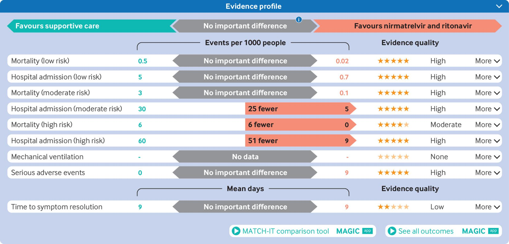
Conclusion
Optimal summary of findings tables allow users to understand the results of the synthesis and appraisal of a body of evidence. They are crucial for guideline panels making recommendations and for HTA reports. Using summary of findings tables ensures the explicit and transparent presentation of all relevant information. Summary of findings tables can take various forms, but they all share the main features and principles that GRADE users should follow.
4.9 Principles of moving from evidence to decisions
This last section of our presentation of Core GRADE focuses on the process for moving from evidence to recommendations (most relevant for developers of clinical practice guidelines) or health policy decisions (most relevant for HTA practitioners). Here, we will use the term recommendations, but the key considerations also apply to policy decisions.
Standards for trustworthy guidelines are now globally accepted and underscore the importance of a systematic and transparent process for moving from evidence to recommendations. Adherence to Core GRADE principles greatly facilitates panels in meeting trustworthiness standards.
We will describe here how a guideline panel using the Core GRADE approach decides on the direction and strength of recommendations and the implications of different strengths of recommendations for clinicians—a term we use to include the full range of health professionals delivering clinical care—and patients. In the last section of the paper, we demonstrate presentation formats that let end users easily access the relevant evidence and make optimal use of the guideline document in their clinical practice.
The information in this article will enable Core GRADE users to:
- Understand the principles of moving from evidence to recommendations and decisions within the Core GRADE framework
- Understand the importance of specifying an individual patient and possible secondary population perspective and the implications for decisions
- Differentiate between strong and conditional recommendations and understand the principles for issuing each type of recommendation
- Understand and apply the concept of minimal important difference (MID) in clarifying values and preferences
- Develop clear, structured, and actionable recommendations using standardised GRADE formats
GRADE recommendations
Recommendations made by guideline panels using GRADE are characterised by their direction—for or against an intervention—and their strength—strong or conditional (weak), resulting in four possible categories: strong in favour of an intervention, conditional in favour of an intervention, conditional against an intervention, and strong against an intervention (Fig 4-24). Core GRADE users choose one category for each recommendation.
Sometimes, although potentially unhelpful to the clinician audience and therefore seldom appropriate, Core GRADE users may find the desirable and undesirable consequences of two alternative interventions so closely balanced that they recommend use of either. A final additional rarely used category is a recommendation for limiting an intervention only to the context of research—an issue we return to in the section "Only in research setting recommendations."
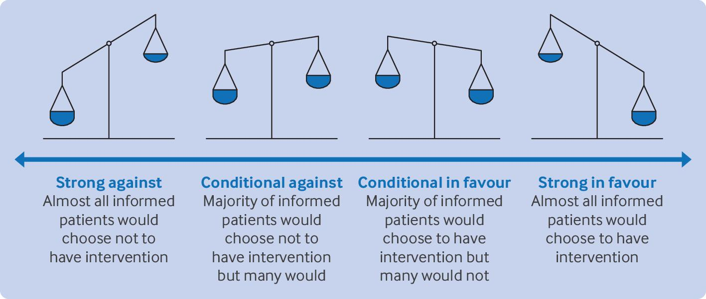
Guideline panels make strong recommendations when they are confident that the desirable consequences of an intervention (eg, decreased mortality and morbidity, improved quality of life) outweigh the undesirable consequences (eg, adverse effects, burden of treatment). The reverse (undesirable outweigh desirable consequences) also dictates a strong recommendation, but against an intervention.
When desirable and undesirable consequences favour the intervention but the magnitude of the difference is smaller, or when considerable uncertainty about their magnitude or importance exists, panels will make conditional recommendations.
Another useful way of thinking about strong and conditional recommendations is to consider a large group of fully informed individuals (that is, they understand the relevant evidence and the ramifications of their decisions) and the choices they would make between an intervention and a comparator. Panels will make strong recommendations when they believe that all, or almost all, fully informed people would choose the recommended course of action. They choose conditional recommendations when they believe that most fully informed individuals would choose the recommended course of action but an appreciable minority would choose the alternative.
Typically, individuals differ in the relative importance they place on benefits, harms, and burdens associated with interventions. We refer to these differing views of importance as peoples' values and preferences. Conditional recommendations signal to clinicians that ensuring a decision consistent with patients' values and preferences will require a process of shared decision making. Conditional recommendations may also reflect population perspectives, such as restricting antibiotic use to avoid the development of resistance.
Determinants of direction and strength of recommendations
To facilitate decisions on the direction and strength of recommendations, GRADE users can refer to GRADE’s evidence to decision frameworks. The frameworks guide users in the key determinants that shape their recommendations. Table 4-8 summarises the primary and secondary issues in GRADE evidence to decision frameworks, and how they influence the strength and direction of recommendations according to the perspective the group takes (see the section “Perspective”).
| Factor | Judgments/considerations | Impact on direction and strength of recommendation |
|---|---|---|
| Primary factors (always considered) | ||
| Benefits, harms, and burdens | How large are the benefits? How large are the harms and burdens? |
The larger the benefits the more likely a panel will make a recommendation for an intervention, and the more likely that recommendation will be strong. The larger the harms and burdens the more likely the panel will recommend in favour of the comparator rather than the intervention, and the more likely that recommendation will be strong |
| Certainty of evidence | What is the certainty of evidence for each of the critical and important outcomes? | The greater the certainty of evidence the more likely a panel will make a strong recommendation. High or moderate certainty evidence often justifies strong recommendations, whereas low and very low certainty mandates, in almost all situations, conditional recommendations |
| Values and preferences | What are the typical patients' values and preferences? How important do patients judge each benefit and harm outcome and the associated burdens? To what extent do patients vary in their values and preferences? How certain is the panel in its judgment about patients' values and preferences and variability in those values and preferences? |
The more patients value the benefits the more likely the panel will make a recommendation for an intervention, and the more likely that recommendation will be strong. The more patients value avoiding the harms and burdens the more likely a panel will strongly recommend against an intervention. The less variability in patients' values and preferences and the more certain a panel is about these values and preferences the more likely they will make a strong recommendation |
| Secondary factors (particularly relevant from a population perspective) | ||
| Resources and cost effectiveness | What are the resources required? Would implementing the intervention versus the comparator lead to important costs or savings? How do those costs and savings relate to benefits and harms? |
The less the costs of an intervention and the greater the savings and cost effectiveness the more likely a panel will make a recommendation in favour of an intervention, and the more likely that recommendation will be strong |
| Feasibility | Is it feasible to implement the intervention? What is the relative feasibility of the intervention versus the comparator? |
The more feasible an intervention the more likely a panel will make a recommendation in favour of an intervention. Feasibility considerations can also lead to guidance on implementation |
| Acceptability | Is the intervention acceptable to patients, clinicians, and other key stakeholders? What is the relative acceptability of the intervention versus the comparator? |
The more acceptable an intervention the more likely a panel will make a recommendation in favour of an intervention |
| Equity | What would be the impact of implementing the intervention versus the comparator on health equity? | The more an intervention would increase equity the more likely a panel will make a recommendation in favour of an intervention. Equity considerations can also lead to guidance on implementation |
GRADE=Grading of Recommendations Assessment, Development and Evaluation.
Organization of the guideline process
Ideally, a guideline panel will include a mix of topic or thematic and clinical experts involved in research, clinicians involved primarily in patient care, patients, and methodologists. Optimal guideline function often involves a small steering or oversight group with one or more methodologists and clinical experts. The steering group is responsible for establishing the agenda for each meeting and guiding the panel through the steps of moving from evidence to recommendations.
The process of moving from evidence to recommendations
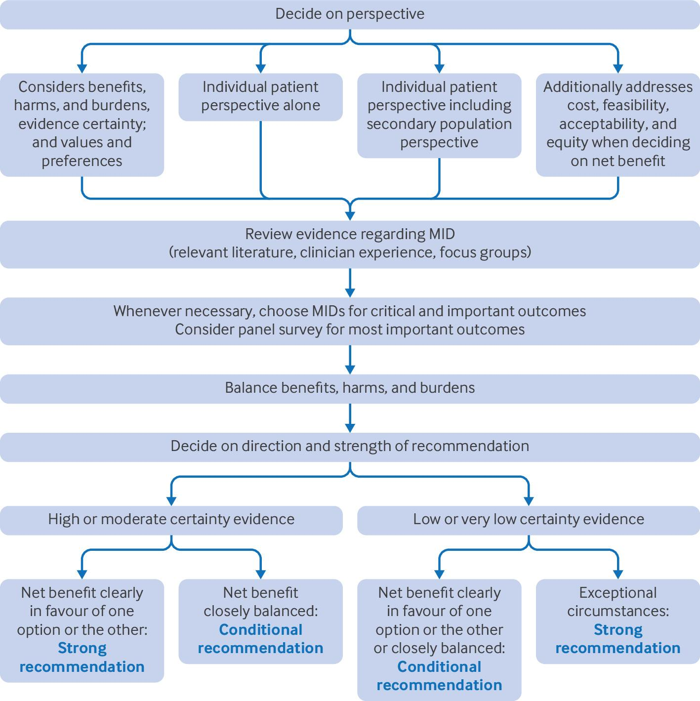
Some GRADE users find it beneficial to use an alternative approach in which they undertake a separate structured review of each evidence to decision factor before integrating it to arrive at their final decisions (Example of a structured evidence to decision framework). Because of its complexity and the large number of decisions involved in its completion, the structured approach represents an option for guideline panels that want to go beyond Core GRADE.
Perspective
Guidelines can consider two perspectives—that of the individual patient and that of a population (also referred to as public health or societal). Core GRADE’s focus is on the individual patient perspective, but Core GRADE recommendations can also include the population perspective as a secondary consideration.
The decision regarding perspective influences how GRADE users approach the evidence to decision framework. Three factors of the framework—the magnitude of benefits, harms, and burdens; the certainty of evidence; and patients’ values and preferences—are key in moving from evidence to recommendations, whatever the perspective. Other factors—costs, cost effectiveness, feasibility, acceptability, and equity—while primarily relevant to the population perspective, may sometimes play a role in the individual perspective.
Choosing the MID for each critical and important outcome: Necessity for choosing the MID
Having considere and rejected outcomes of little importance and classified important outcomes as critical versus important but not critical,1 GRADE users then decide on the MID for each important or critical outcome. This is necessary for two reasons. Firstly, choosing a threshold will make certainty ratings possible. To inform recommendations, that threshold must be the MID (the smallest difference in effect that patients would consider important) rather than the null. Thus, decisions on the MID must precede certainty ratings in the evidence synthesis.
Having decided on the MID for each outcome, GRADE users rate certainty in an important effect if the point estimate proves greater than the MID and in an unimportant effect if the point estimate proves less than the MID. The systematic review team then rates certainty in relation to the MID threshold for both imprecision and inconsistency domains.
The second reason is that MIDs reflect the relative importance patients place on different outcomes—that is, patients’ values and preferences. For instance, MIDs associated with mortality of 1%, stroke of 2%, myocardial infarction of 3%, and serious gastrointestinal bleeding of 5% reflect the gradient of importance across these outcomes. If the MID associated with mortality is 1%, with stroke is 2%, with myocardial infarction is 3%, and with serious gastrointestinal bleeding is 5%, it tells a great deal about the panel’s inferences regarding the gradient of importance across those outcomes (importance gradient across mortality, stroke, myocardial infarction, and bleeding, mortality five times as important as bleeding).
These value and preference judgments facilitate guideline panels trading off the benefits, harms, and burdens of alternative management strategies. Choosing a single specific MID for a particular outcome may not be required. For instance, consider a treatment associated with a large mortality benefit of 5%. All would agree that this represents an important benefit. Consider further that the boundary of the confidence interval (CI) representing the smallest plausible effect is 3%. This too is clearly an important benefit.
Thus, whether the MID for mortality is 2%, 1%, or less than 1%, the CI does not cross the MID threshold and one will not rate down for imprecision. As a result, one need not specify a single particular value for the mortality MID. In many instances, however, either the point estimate or one boundary of the CI will be in the vicinity of a possible MID, and choosing a specific value of the MID is then necessary. Thus, the process Core GRADE users should follow is to review estimates of effects and 95% CIs, determine if MIDs are necessary, and if necessary, establish MIDs.
Given the frequent necessity for choosing a single specific MID, decision makers face the challenge of how to choose an appropriate MID. In the next section of this article we describe the available approaches.
Evidence that may inform choice of MID
Ideally, for each key outcome, guideline panels would have available a systematic survey of all studies bearing on the MID as well as wider issues of values and preferences. For instance, a BMJ rapid recommendation guideline panel addressing the management of patients with shoulder conditions conducted a systematic survey of MIDs for improvement in patient reported outcomes related to shoulder conditions that informed a recommendation for subacromial decompression surgery.
However, for most outcomes in most guidelines, little or no useful studies of patients’ values and preferences are available. Use of guideline panels limited time and resources in low yield searches for relevant studies on patients’ preferences is unwise. Core GRADE practice is therefore to consult experts in the specialty and, if the likelihood of finding relevant evidence is very low, to forego the search. We use the same approach for evidence to decision considerations of acceptability, feasibility, and equity in which systematic searches may be even less likely to provide useful information.
In the absence of well done studies ascertaining the values and preferences of large samples of patients, or studies addressing MIDs of specific instruments for measuring health status (patient reported outcome measures), alternatives to infer MIDs are far from ideal. In principle, therefore, guideline panels that fail to identify such studies would launch their own. As guideline panels’ limited resources and time frame make full scale value and preferences studies unfeasible, this is not, however, realistic. An approach that is less satisfactory but still informative and much more feasible is conducting a focus group with a small number of patients. For example, the American College of Rheumatology does this for all its guidelines, and the results have proved useful in informing value and preference decisions for the guideline panels.
The experience of clinicians in conducting shared decision making can also be informative about patients’ values and preferences. For example, a guideline addressed pregnant women at risk of venous thrombosis who were considering anticoagulation with warfarin (low burden treatment) or low molecular weight heparin injections (high burden treatment). Clinicians with considerable experience with such patients had found that women almost invariably chose the injections to avoid the small risk of relatively minor fetal abnormalities that may be associated with warfarin. This information suggests that the MID for fetal abnormalities is very small (mothers will find even a small risk very important) and the MID for the burden of the heparin injections large (mothers will consider a substantial burden of little importance). The approach is unfortunately open to biased inferences and is far inferior to well conducted large patient studies of individual patients’ values. If, however, clinicians are critical in their reflections on their shared decision making experience, the information may be helpful.
Failing these options, Core GRADE users may be able to utilise less structured conversations with their patients, or, for patient partners, with other patients. Whatever the source of evidence on patients’ values and preferences, that evidence requires interpretation to generate a trustworthy MID estimate.
Choosing MIDs
Trying to arrive at a best estimate of the MID through unstructured discussions is challenging, at least in part because most panelists have limited experience with deciding on MIDs. This problem has led to the development of a structured survey approach to help guideline panelists decide on MIDs for their most important outcomes (An example of an innovative panel survey approach for eliciting guideline panelists’ views on the minimally important differences) (Experience with the panel approach to establishing MIDs). The approach relies on offering panelists extremely low and high MIDs, gathering their associated choices, and then moving in both directions towards more likely estimates. The candidate MID is the value at which half the panel believes the majority of patients would consider the magnitude of effect unimportant and the other half believes the majority would consider the magnitude important. The guideline steering group explains the survey to panelists, drafts the survey, administers the survey to the panel, and presents and provides an interpretation of the results.
Reflecting differences in the values and preference of their target populations, including the socioeconomic and cultural environment in which they function, panelists may choose quite different MIDs for the same outcome. Explicit reporting of MIDs, and value and preference statements, allows users to understand the determinants of recommendations and how they might change with alternative values and preferences.
Moving beyond MIDs to other issues in elucidating panels’ views on patients’ values and preferences, the survey approach also provides a method to examine the minimal benefit patients would require, given the existing harms and burdens, to use an intervention. A panel used the approach when evaluating the smallest reduction in end stage renal disease patients would require to choose plasma exchange given its 6% increase in serious infections.22 Finally, surveys can present panelists with a summary of the benefits, harms, and burdens and obtain their views on the distribution of choices—from all who would choose to receive to all who would choose to decline—in the relevant population. A panel conducted such a survey to help inform the recommendation for sodium-glucose cotransporter-2 inhibitors in patients at varying risk of adverse vascular outcomes.
Balancing benefits, harms, and burdens
In the next step in making recommendations, the guideline steering group and panel review the summary of findings table and judge the trade-off between benefits on the one hand and harms and burdens on the other. This decision will be informed by the inferred values and preferences of patients that the panel must make clear through an appropriate statement. Such value and preference statements capture the key considerations in trading off desirable and undesirable consequences of the intervention and comparator. This statement will be highly contextual. For instance, when only low certainty evidence is available—as was the case early in the covid-19 pandemic—the trade-off requires statements of the relative value of uncertain benefit versus, usually, more certain harms and burdens.
Guideline panelists may have limited experience in constructing value and preference statements, and the panel steering group, guided by the participating methodologists, can present them with a suggestion. Box 1 provides examples of guideline value and preference statements from several organisations, including the World Health Organization (WHO) covid-19 guidelines and a BMJ Rapid recommendation. As presented in the first example, we have found it valuable to present options of opposite values and preferences from which the panel can choose—the choice will likely determine the direction of the recommendation.
Box 1: Examples of guideline value and preference statements
Example 1: WHO guideline on clinical management of covid-19
- The WHO guideline on clinical management of covid-19 includes one recommendation for awake prone positioning. The evidence indicated a small reduction in the need for mechanical ventilation with no other important benefits. The panel considered alternatives based on its judgments about patients' values and preferences (see below) and ultimately selected the first option during the recommendation process.
- Option 1: "The panel placed a relatively high value on a modest reduction in invasive mechanical ventilation and a lower value on the discomfort patients experience using awake prone positioning."
- Option 2: "The panel placed a relatively low value on a modest reduction in invasive mechanical ventilation and a higher value on the discomfort patients experience using awake prone positioning."
Example 2: Living WHO guideline on drugs for covid-19
- During the early phase of the covid-19 pandemic, the panel producing WHO rapid recommendations on drugs for covid-19 considered the following patients' values and preferences when issuing recommendations:
- "The Guideline Development Group agreed that the following values and preferences would be representative of those of typical well-informed patients:
- Most patients would be reluctant to use a treatment for which the evidence left high uncertainty regarding effects on the outcomes they consider important. This was particularly so when evidence suggested treatment effects, if they exist, are small and the possibility of important harm remains.
- In an alternative situation with larger benefits and less uncertainty regarding both benefits and harms, more patients would be inclined to choose the treatment."
WHO=World Health Organization.
In the two examples, the values and preferences selected interacted with benefits and harms and the certainty of evidence to inform the panel’s decisions. In the first instance regarding awake prone positioning for ventilation in seriously ill patients with covid-19, the point estimate suggested a 1.2% reduction in mortality, but the CI included a 1.5% increase. The evidence for hospital length of stay was equally unconvincing. Results showed moderate certainty evidence supporting a 4.1% decrease in endotracheal intubation.
The panel was then left to trade off this relatively small benefit against patient discomfort and nursing burden. The value and preference judgment that the small reduction in ventilation carried a higher value than discomfort and burden determined the recommendation in favour of awake prone positioning. However, the panel believed the balance between desirable and undesirable consequences was a close one, that an appreciable minority of fully informed patients (those who poorly tolerate awake prone positioning) would decline the intervention, and thus decided on a conditional recommendation.
In the second example, early in the pandemic, clinicians were considering repurposed drugs or newly tested agents with only low or very low certainty evidence of benefit in patients with severe or critical covid-19. As is often the case when only low certainty evidence is available, decisions were very highly value and preference sensitive. The WHO guideline panel recognised that some patients, given the severity of their illness, would be ready to try agents with only scant evidence of benefit.
Others would be reluctant to subject themselves to the adverse effects of such agents. Aware of these varying values, the panelists consistently made conditional recommendations. Their value and preference judgments, captured in their statement, drove the direction of their conditional recommendation against several drugs. When higher certainty evidence becomes available, the trade-off typically becomes clearer. For instance, a practice guideline addressing antithrombotic treatment required trading off thrombotic versus bleeding outcomes when in many instances high or at least moderate certainty evidence was available.
The trade-off may involve both individual patient and population issues and, when it does, the secondary issues of cost, feasibility, acceptability, and equity become important (fig 2).
For example, a guideline related to transfusion thresholds required consideration of both mortality (the key outcome from the individual patient perspective) and conservation of the blood supply (the key outcome from the population perspective).27 Considering conservation of blood supply contributed to the panelists’ decision to make a strong recommendation in favour of a lower transfusion threshold.
Constructing the recommendations
The examples above show how those producing recommendations must first decide on their direction and subsequently address their strength as strong or conditional. Panelists make strong recommendations when they are confident that benefits of an intervention or comparator clearly outweigh the harms and burdens of the alternative, and they make conditional recommendations when the net benefit is less clear (Table 4-8). We have found a useful way to conceptualise the distinction between the two situations. When panelists believe that all or almost all fully informed individuals would choose a particular option, they make a strong recommendation. When panelists believe that an appreciable minority, because of differing values and preferences, would choose the option not recommended, they make a conditional recommendation. We have illustrated this logic in two of the previous examples.
When certainty is low or very low for either benefits or harms and burdens it is almost always impossible to have the level of certainty required for a strong recommendation. As a result, Core GRADE users should generally avoid making strong recommendations in the presence of low certainty evidence for key outcomes. They may, however, consider a strong recommendation for an intervention when the certainty of evidence for benefit is low and the likelihood of a bad outcome of great importance (eg, death, stroke) is very high. They may make a strong recommendation against an intervention when there is low certainty of evidence for benefit and high or moderate certainty for substantial harm (Examples of appropriate strong recommendations based on low certainty evidence).
Only in research setting recommendations
Panels may sometimes make recommendations for use of an intervention only in research. Such a recommendation would be an alternative when panels consider the generation of higher evidence an important priority. For example, early in the covid-19 pandemic WHO recommended use of ivermectin in research settings only.
Additional examples of moving from evidence to recommendations: Individual patient perspective
For many recommendations, particularly those involving simple, highly accessible, and generally affordable pharmaceutical interventions, GRADE users will solely or primarily consider the patient perspective. The panelists in these situations focus evidence to decision considerations on benefit, harm, burden, evidence certainty, and values and preferences, and they only briefly consider cost, feasibility, acceptability and equity—long enough to confirm that such factors will not have a substantial influence on the recommendations.
For example, WHO’s living guidelines for the treatment of people with covid-19 considered a recommendation of corticosteroids for those with severe or critical disease. The relevant systematic review reported a probable 3.4% absolute reduction in mortality—an order of magnitude far greater than WHO’s MID of 3 per 1000—as well as substantial reduction in need for mechanical ventilation. Moreover, the review reported convincing adverse effects only in the relatively unimportant outcomes of hyperglycaemia and hypernatraemia. Given the low cost and wide availability of the intervention, the panel judged secondary evidence to decision considerations of little relevance. Reasoning that all or almost all people with severe or critical covid-19 would choose to receive corticosteroids, the panel issued a strong recommendation in favour of these drugs.
In another example, two allergy organisations addressed whether topical treatments for uncontrolled atopic dermatitis should be applied once or twice daily. The network meta-analysis that informed the recommendations showed a small improvement with twice versus once daily application (risk difference of 5% for improved eczema compared with the MID threshold of 3%) and similar small improvements in itch, quality of life, and sleep disturbance. Harms proved no different between groups, with burdens anticipated to be lower in the once daily group. To decide whether patients would consider the small benefits worth the burden of a second application, the panel conducted a systematic review of patients’ values and preferences and discovered that they place a high value on minimising the burden associated with application of topical treatments. This led the panel to make a conditional recommendation for once daily application. Given the modest cost considerations, the absence of feasibility issues, and the lack of impact on equity from the individual patient perspective, only primary considerations proved relevant to the recommendation.
Population perspective and secondary evidence to decision considerations
When guideline panels take a population perspective into consideration, secondary evidence to decision considerations will almost always arise. For instance, making a recommendation about the use of remdesivir in people with non-severe covid-19 at high risk of hospital admission, given a probable important reduction in the key outcome of hospital admission and no compelling evidence of serious adverse effects, a WHO guideline panel made a recommendation in favour of the drug. Given the moderate certainty of evidence on the critical outcomes of benefit, the recommendation might have been strong were it not for the requirement for a three day course of intravenous treatment.
For the patient, one could consider the necessity to come to a facility for the injection on three consecutive days as a burden, a practical issue, or an issue of acceptability. However one chooses to look at it, the requirement is likely to dissuade some people from using remdesivir. Moreover, the complexity of establishing or mobilising outpatient facilities for using intravenous treatment involves challenges and cost. Finally, the panel noted that differential access to remdesivir could exacerbate health inequities. The feasibility, acceptability, cost, and equity concerns led the panel to issue a conditional rather than a strong recommendation for use of the drug.
An AABB guideline panel considering a restrictive (7 g/dL) versus a liberal (9-10 g/dL) transfusion strategy in patients with anaemia admitted to hospital made a strong recommendation in favour of the restrictive strategy. For patients, fewer blood transfusions and thus reduced likelihood of a blood transfusion represented a benefit of the restrictive strategy. The supporting systematic review also reported a point estimate of no difference in mortality between the two strategies. However, the CI that included an important 1.3% increase in mortality with the restrictive strategy might have led some very risk averse patients to choose the liberal strategy and thus have prompted a conditional recommendation. While the panelists’ primary focus was the individual patient, they also considered the population perspective, particularly stewardship of blood supply. Their concern about optimising the use of this scarce resource contributed to the decision to issue a strong recommendation.
Optimized presentation of recommendations
When presenting recommendations, GRADE users must ensure that their suggestions are clear and actionable and that they contain explicit information about the population, intervention, and most often also the comparison. GRADE offers specific language for strong (we recommend) and conditional (we suggest) recommendations. Guideline authors may provide explicit direction for, in the presence of conditional recommendations, engaging in shared decision making. They should avoid wording associated with ambiguity, such as recommendations “to consider” an intervention.
GRADE users should present recommendations along with their strength and, optionally, with the associated certainty of the evidence. Box 2 provides examples of recommendation framing. Fig 4-26 and Fig 4-27 show alternative approaches of how recommendations can be phrased, including provision of succinct accompanying remarks when required.
Box 2: Examples of presenting recommendations
Example 1: "In patients with uncontrolled atopic dermatitis refractory to moisturization alone, the [Joint Task Force] panel recommends addition of a topical corticosteroid over no topical corticosteroid (strong recommendation, high certainty evidence)"
Example 2: "For older adults with newly diagnosed [acute myeloid leukemia] considered candidates for intensive antileukemic therapy, the [American Society of Hematology] guideline panel suggests intensive antileukemic therapy over less intensive antileukemic therapy (conditional recommendation based on low certainty in the evidence of effects)"
Example 3: "Recommendation 2: In patients with atopic dermatitis, the Joint Task Force panel suggests using a standard, bland (free of fragrance and other potential contact allergens) over-the-counter moisturizer over a prescription moisturizer medical device (eg, Atopiclair, Eletone, Epiceram, MimyX, Neosalus, Zenieva, and PruMyx) (conditional recommendation, low-certainty evidence)"
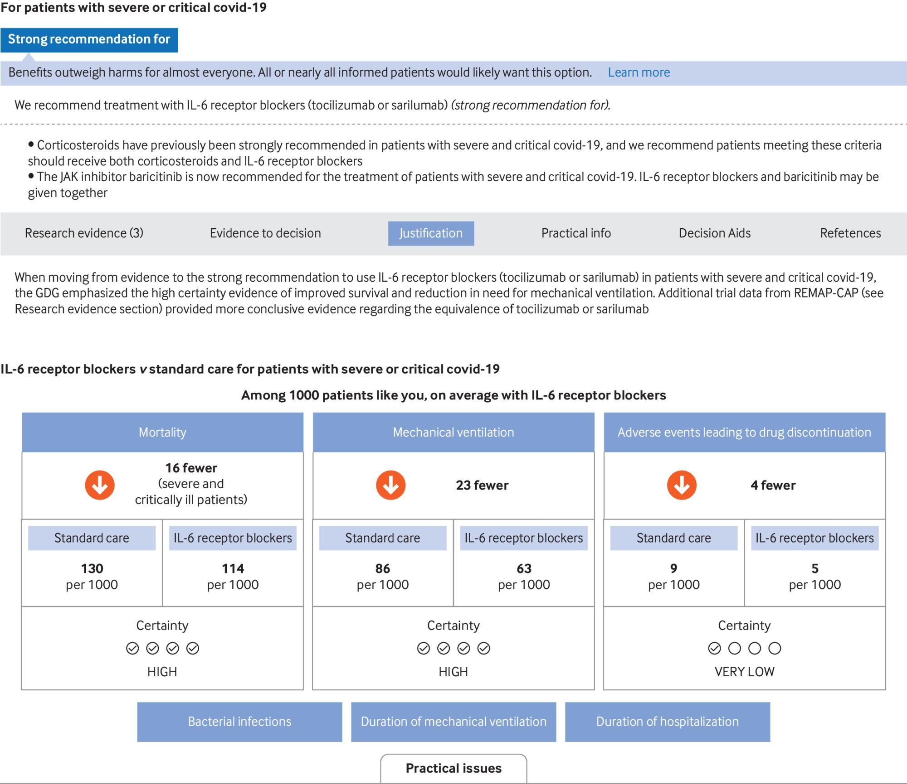
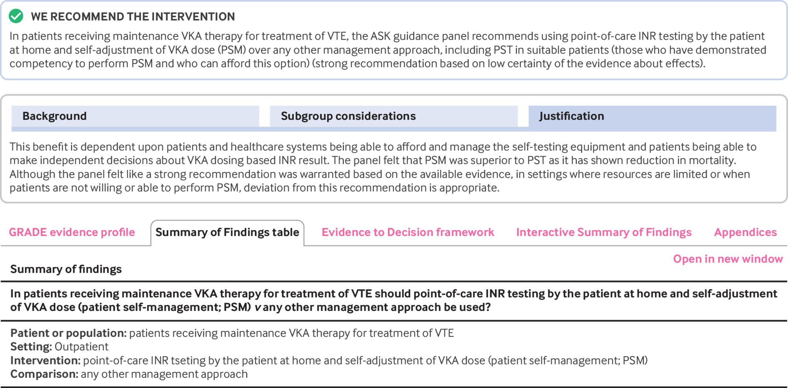
In general, it is preferable to present recommen-dations in favour of a particular management approach (including the comparator in the initial framing of the population, intervention, comparison, and outcome) rather than against an approach (typically the intervention). Considering the management of atopic dermatitis (eczema), a joint task force of two allergy societies compared prescription moisturisers (initially the intervention) with comparator over-the-counter moisturisers and found their effects to be similar. The panelists believed that the burdens and acceptability of the prescription moisturisers warranted use of the over-the-counter preparation, but instead of recommending against the prescription, they stated, “In patients with atopic dermatitis, the Joint Task Force panel suggests using a standard, bland over-the-counter moisturizer over a prescription moisturizer medical device.”
Situations do, however, arise when an ineffective or harmful treatment is in wide use and a recommendation against that treatment is appropriate. For instance, the same guideline panel on atopic dermatitis addressed dilute bleach baths for treatment. Its systematic review and meta-analysis showed that the intervention was effective in those with moderate-severe disease but likely provided little to no benefit in those with mild disease.34 The intervention is burdensome and associated with adverse effects, albeit usually mild. The panelists believed that the key message was, rather than to use the alternative, to avoid dilute bleach baths in those with mild disease, and so recommended against the intervention.
Enhancing dissemination of guidelines
GRADE aims to make it easier for clinicians and their patients to make well informed decisions in practice, using guidelines as tools for decision support. User testing of GRADE based guidelines underscores the need for optimised presentation and dissemination of guidelines, summary of findings tables, and decision aids, in multilayered formats. Fig 4-28 shows the living WHO guideline on drugs for covid-19. Available online as open access, it shows how interactive infographics can provide an overview of recommendations, with supporting GRADE summary of findings tables, practical considerations, and succinct narrative presentations of evidence to decision issues (refer to user testing infographics).
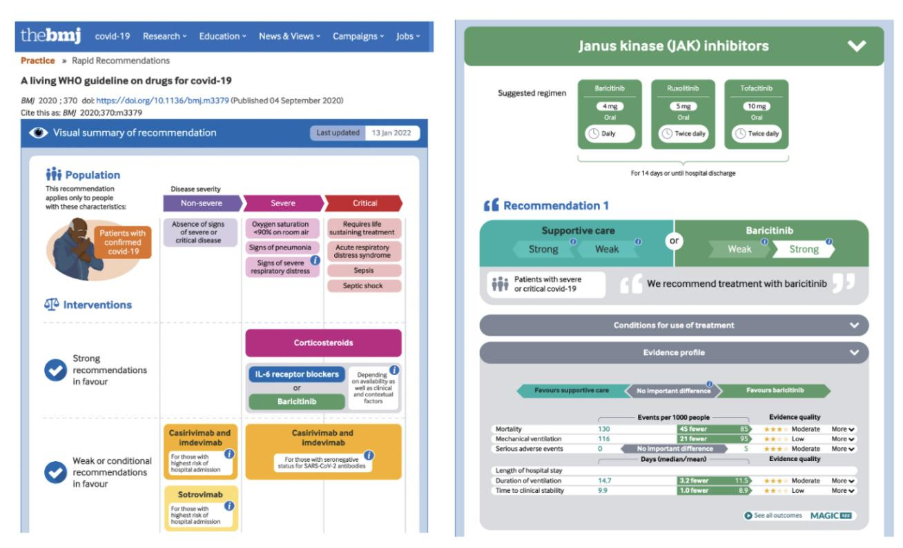
Fig 4-26 and Fig 4-27 also show how users can access the full guideline with all relevant information (eg, justification, practical issues) in multilayered formats available online on all devices. For the WHO living guideline, this includes tools for shared decision making, created from GRADE summary of findings tables and adding practical issues (bottom panel in Fig 4-26). This guideline also illustrates an additional challenge of living evidence: dynamic updates of recommendations warrants communicating what is new.
Ceation of digitally structured guideline content in online platforms, rather than PDF documents, facilitates publication of multilayered guideline formats. To further enhance dissemination, guideline groups can create digitally structured recommendations through websites, pathways, flowcharts, and local protocols as well as decision support systems linked to patient data in the electronic health records. These advances facilitate unhindered access to recommendations at the point of care. A major challenge, in particular for GRADE teams working in resource constrained settings, is the costs of using available online platforms for authoring and publication.
Conclusion
Core GRADE provides a clear, practical path from evidence to recommendations and decisions (Fig 4-24). The approach emphasises the necessity to specify the perspective (always the individual patient, sometimes secondarily the population), establish MIDs for key outcomes, and make explicit the underlying values and preferences. The approach highlights the key role of certainty of evidence in determining whether a recommendation is strong or conditional, and clarifies primary and secondary considerations in moving from evidence to recommendations.
Additional information
Framing the question: another example
Considering the possibility of different effects
Imprecision rating for ranges of effects
Calculating absolute effect based on baseline risk and relative effect
Choosing between random effects and fixed effect models
Three visual criteria: Generating an MID relative risk threshold
Criteria for judging the credibility of subgroup effects: Using ICEMAN to assess McAlister
Beyond Core GRADE: Rating risk of bias across bodies of evidence
Evidence to decision: Experience with the panel survey approach to establishing MIDs
Examples of appropriate strong recommendations based on low certainty evidence
Example of a structured evidence to decision framework
Alternative approach to rating up certainty of evidence from non-randomized studies of interventions
Including practical issues in SoFs
Calculating and presenting absolute measures of effect: Directly calculating risk differences
Calculating absolute effects based on baseline risk and relative effects
Writing footnotes to explain certainty of evidence judgments
Alternative format for summarizing the evidence: Evidence profiles
Beyond Core GRADE: Alternative approach to addressing missing outcome data